1The Life I Secretly Dream About
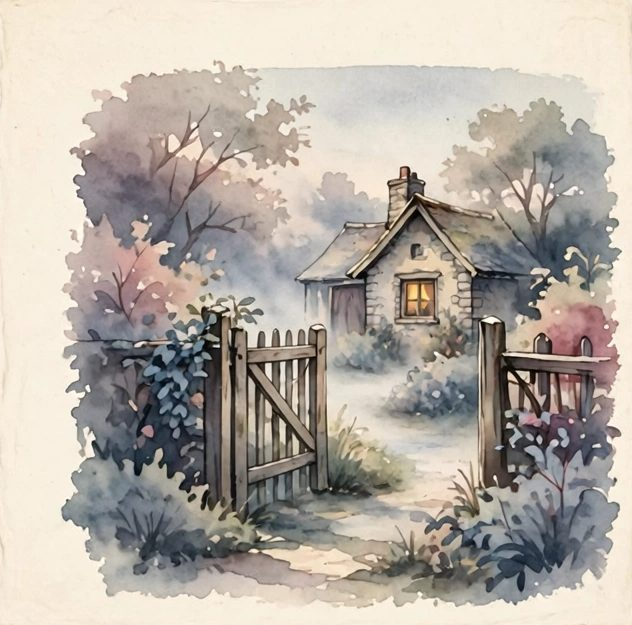
A small house at dawn seen through a garden gate, one window lit amber, mist over the path.
The house begins with a simple admission, offered without flourish and without apology. Somewhere behind the ordinary days, behind the work and the errands and the rooms that are actually lived in, a person carries another life in mind. It is quieter there, or slower, or nearer to water, or further from noise. The Keeper of the Quiet Windows does not treat this second life as a secret to be solved. The house treats it as a window to be kept, a place where a person may stand for a moment and look, honestly, at what the heart keeps returning to when no one is asking for an account.
From the start, the house is clear about what this dream is not. A secret dream is not a lie about the lived life, and it does not make the lived life false. A person can be grateful for a home and still picture a different lane, a different table, a different morning. The two lives do not cancel each other. One is built from choices, chances, duties, and years. The other is built from longing, memory, and imagination. The register at the Window Desk holds both without forcing them into a quarrel, and the first pages of this hall are written in that calm spirit of allowing both to be true at once.
The walk through this hall will stay close to small things. A gate, a sill, a curtain, a chair, a lane at evening. Large claims are not made here, because the dream itself rarely speaks in large claims. It speaks in details, in the wish for light at a certain hour, for a door that opens onto green, for time that is not always borrowed. By the end of the hall, the visitor will not have been given a plan or a promise. The house sells nothing and promises nothing. What it offers is attention, paid slowly, to a life that many people carry and few people describe.
2The Window at Dawn
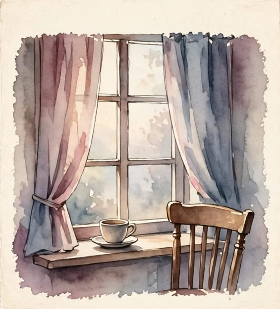
A tall window at first light, curtains half open, a chair and a teacup on the sill below it.
Dawn is the natural hour of this hall, and the Keeper opens the second window while the light is still thin and blue. At dawn the dreamed life does not yet have to explain itself to the day. It can simply be present, the way mist is present over a path, without argument and without weight. The chair by the window is not there for display. It is there for sitting, for the brief pause before work begins, when a person looks outward and, almost without deciding to, looks inward as well, toward the other morning that is imagined and not yet lived, or perhaps never to be lived in full.
The teacup on the sill matters to the house because it keeps the scene ordinary. The secret dream is often spoken of as if it must be grand, a villa, a fortune, a complete escape. In the register, the entries are humbler. A person dreams of waking without hurry. Another dreams of a window that faces trees instead of a wall. Another dreams of living near an old friend, or of working with the hands, or of evenings that end in quiet rather than in exhaustion. The dawn light does not enlarge these wishes. It only makes them visible, for a little while, before the curtains of the day are drawn wider and attention moves on.
The Keeper notes that dawn returns, and so does the dream. It is not seen once and settled forever. It appears again in different seasons of a life, sometimes sharper, sometimes faded, sometimes altered by what has been lost or learned. A young person dreams of distance. An older person may dream of nearness. The window stays the same size, but what is seen through it changes with the viewer. The house asks for no conclusion at this window. It asks only that the glimpse be received without mockery and without haste, as a piece of true information about pace, warmth, and company, delivered in the softest light of the day.
3The Keeper of the Quiet Windows
Every hall in this house has a keeper, and the keeper of this hall is called the Keeper of the Quiet Windows. The title describes work that is mostly invisible. The Keeper tends the glass, eases the hinges, straightens the curtains, and keeps a register of what has been glimpsed, in plain words and without adornment. No visitor is announced. No dream is displayed to a crowd. The keeping is a form of care that respects closed doors as much as open ones, and understands that some things remain whole only because they are not handled too often or spoken of too loudly in company.
To keep a quiet window is not to hide it and not to exhibit it. It is to maintain a boundary that can be crossed by one person, at chosen moments, in chosen light. The Keeper does not stand guard like a jailer, and the Keeper does not act as a guide who explains what another person ought to want. The role is nearer to that of a gardener. A gardener does not invent the seasons or hurry the roots. A gardener clears what blocks the light, mends what is broken, and leaves the growing to the living thing itself. In the same way, the Keeper clears misunderstanding away from the dream and leaves its meaning with its owner.
Visitors sometimes ask whether the Keeper keeps the windows quiet by keeping them secret from the dreamer as well. The answer in the register is no. The dreamer knows. The quiet is not ignorance, and it is not denial. It is a chosen privacy, maintained with attention. The Keeper simply ensures that the window is there when it is needed, clean enough to see through, and curtained enough that seeing remains a choice. In a house that sells nothing and promises nothing, this modest service is the whole of the work, and the Keeper performs it at dawn and at dusk, in the same unhurried manner, year after year.
4The Window Desk
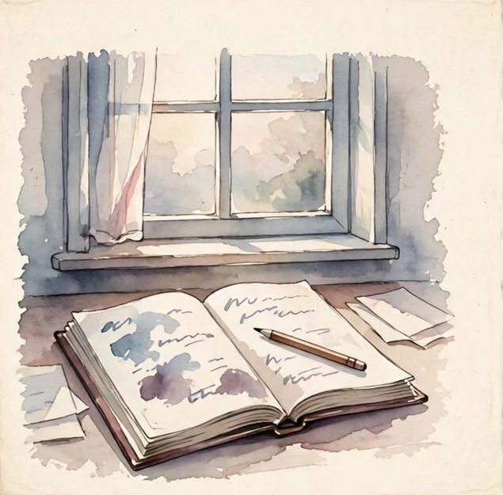
A keeper's desk beneath a window, an open register and a pencil, soft dawn light across the page.
Beneath the tallest window stands the Window Desk, a plain piece of furniture with a worn edge where many hands have rested. On it lies the register, a large book with unruled pages, and beside the register a pencil kept sharp but never hurried. This is where the Keeper writes, not judgments, not scores, but brief accounts of what the windows show. An entry might read only a few lines. A smaller house. A morning without an alarm. A table large enough for neighbours. The desk is the still point of the hall, the place where looking becomes language, slowly and with care.
The register is not a ledger of debts, and nothing entered there is owed by anyone to anyone. That distinction is kept firmly at this desk, because a dream can be spoiled when it is written down as an obligation. The Keeper writes in a different spirit. The words are descriptive, not demanding. They record direction rather than destination, a wish for more quiet, more making, more air, more time outdoors, written the way a compass bearing is written, useful for orientation and useless as a demand for arrival. The pencil, rather than a pen, is deliberate. What is written here may be softened, revised, or left unfinished without any sense of failure.
Anyone may imagine sitting at the Window Desk for a few minutes, even without a book of their own. The exercise the house suggests is modest. Write the dreamed life in ordinary sentences. Name the hour of waking, the work of the hands, the people nearby, the sounds at evening. Leave out the explanations and the defences. The desk does not ask why the dream is as it is, and it does not ask what will be done about it. It offers a surface, a light, and a pause. Often that is enough for the dream to become clearer, not louder, and for the writer to rise from the chair with a steadier sense of what matters.
5A Dream Kept Private
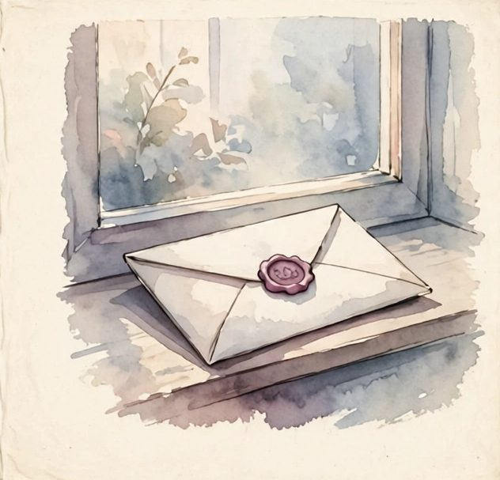
A folded letter sealed and resting on a windowsill, kept private in the morning light.
Privacy is the subject of this window, and the house treats it as a protection rather than a problem. A folded letter on a sill is not necessarily a letter that someone is ashamed to have written. It may be a letter not yet ready to be read aloud, or a letter whose meaning would change if it were passed from hand to hand. In the same way, a dream kept private is often kept private because privacy protects it. Kept from casual comment, from quick advice, from the pressure to turn it immediately into a plan, the dream can remain tender, exploratory, and honestly unfinished for as long as it needs to be.
The Keeper is careful to separate privacy from shame, because the two are so often confused. Shame says a thing must be hidden because it is wrong. Privacy says a thing may be held close because it is personal, early, or simply not offered for general use. A curtain is drawn at night in almost every house on the lane, and no one concludes that something disgraceful is happening behind it. People draw curtains for warmth, for rest, for the simple wish to be unobserved for a while. The house extends the same ordinary courtesy to the dreamed life, and records it in the register without any mark of suspicion.
There is also a practical wisdom in keeping the dream private for a season. Spoken too early, a fragile picture can be argued out of shape. Friends, meaning well, supply budgets, warnings, and examples. The dream, which was a source of quiet direction, becomes a proposal that must be defended. The Window Desk counsels patience instead. Let the picture settle. Visit it more than once. Notice which parts return and which parts fade. Privacy, in this hall, is a shelter for discernment, a way of giving the inner life the same unhurried time that a garden is given before anyone decides what the harvest will be.
6The Curtain Is Not a Wall
The sixth window makes a distinction that the whole hall depends on. A curtain is not a wall. A wall ends the matter. It blocks light entirely, forbids passage, and pretends that nothing exists beyond it. A curtain does something different. It softens, it filters, it marks a boundary that can be moved by a hand in a second. The dreamed life lives behind a curtain in most people, not behind a wall, and that difference is a source of hope in this house. What is curtained can be revisited. What is walled off can only be forgotten or battered against, neither of which the Keeper recommends to anyone.
Because the curtain can move, the relationship with the dream can change gently over time. On some days a person draws it fully aside and looks for a long while, perhaps while walking, perhaps while washing dishes, letting the imagined morning supply a little strength for the real one. On other days the curtain stays closed, and the lived life receives the whole of the attention, without rivalry. The house sees no failure in either position. The curtain exists to serve the person, not to accuse the person. Its cloth is light for a reason. It was never meant to carry the weight of a verdict about a life.
The Keeper also notes what a curtain does for those outside the window. It offers them a decent limit. Neighbours, colleagues, even those who love the dreamer most, are not entitled to a full view at all hours. A household that keeps its curtains is not being cold. It is observing the old courtesy by which inner rooms remain inner rooms. In this hall, that courtesy is extended to the imagination. The dream may be glimpsed, in time, by invitation, the way a guest is shown a garden. It is not thrown open to the street, and the street, if it is kind, does not press its face to the glass.
7Why the Dream Stays Quiet
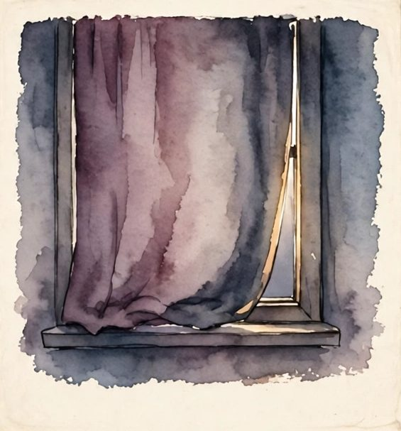
A window with its curtain drawn almost closed, one thin line of golden light at the edge.
Why does the dream stay quiet in so many lives, even in lives that are talkative and open in other ways. The register offers several answers, and none of them is a single explanation forced onto everyone. Sometimes the dream stays quiet because words for it are hard to find. The picture is felt as weather, as a preference for a certain pace or light, before it is understood as a wish. Sometimes it stays quiet because the person is busy honouring real commitments, and the dream waits, patiently, in the margin of the day, content to be visited rather than pursued with both hands at once.
Sometimes, too, the dream stays quiet because it has been laughed at before, or hurried, or translated too quickly into money and status by listeners who missed its point. A person who dreamed simply of unhurried mornings may hear the wish retold as idleness. A person who dreamed of a smaller place may be asked what went wrong. After a few such translations, quiet begins to look like wisdom. The Keeper records these histories without bitterness. The hall does not exist to correct every listener. It exists to provide one room, at least, where the dream is heard in its own terms, at its own volume, which is low, steady, and clear.
There is a final reason, and the house regards it as the most honourable. Some dreams stay quiet because they are not demands at all. They are companions. A person may carry the imagined life the way a person carries a favourite song, not to perform it, but to be steadied by it on a long road. To speak of it constantly would change its nature. Quiet, in this case, is not a symptom of anything hidden or broken. It is the natural volume of something that is doing its work gently, in private, like the thin line of light at the edge of a curtain, enough to navigate by.
8Everyone Looks Through One
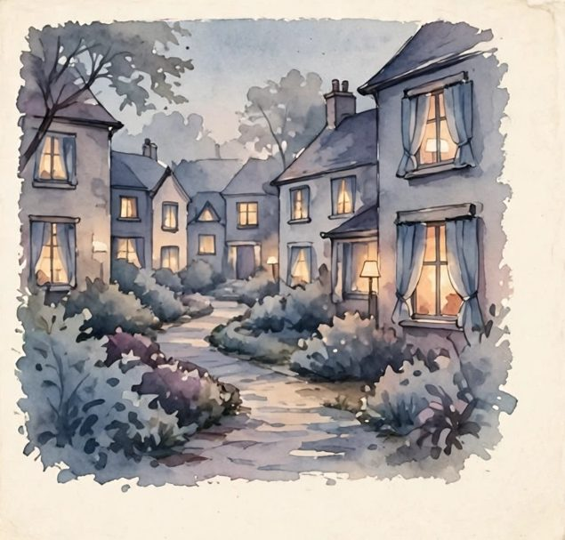
A garden path at dusk passing many lit windows, each curtain drawn, each lamp warm.
The path at dusk teaches the most democratic lesson in the hall. House after house shows a lit window, and behind every lit window, the Keeper suggests, someone is looking through a private picture of another life. The clerk dreams of a workshop. The workshop owner dreams of the sea. A parent dreams of a quiet study, and a scholar dreams of a farm with muddy boots by the door. No rank protects a person from longing, and no success quite finishes the imagination. The hall therefore speaks of the secret dream as an ordinary human possession, like a shadow, carried by almost everyone who walks the lane at evening.
Knowing that everyone looks through one window or another changes the tone in which the dream can be held. It removes the loneliness from it. The dreamer is not a strange exception, quietly discontented while others are fully satisfied. The dreamer is a member of a large, unorganised company of people who live one life faithfully while imagining another tenderly. The register does not collect their names, because the company has no membership and no meetings. Its fellowship is felt rather than formalised, in the small relief of realising that a neighbour's lit window, like one's own, may frame a wish that has never been mentioned at the gate.
The house draws a gentle rule from the dusk path. Since everyone looks through one, everyone can afford to be unhurried and kind when a glimpse is offered. A dream confided by a friend is not an invitation to take over its management. It is not a request for funding, correction, or applause. It is a window opened a little wider for a moment, in trust. The proper response, as the Keeper models it, is attention without seizure. Look, acknowledge the warmth of the lamp, perhaps say what part of the picture seems most alive, and then step back onto the path, leaving the curtain exactly where its owner wishes it to be.
9The Dream Is Not a Debt
This window addresses a misunderstanding that can quietly spoil the whole subject. A dream is not a debt. It is not a sum owed by the present life to an imagined one, to be collected with interest in the form of regret. The Keeper has seen entries in other books, written in harsher houses, where every unfulfilled wish was treated as an unpaid bill. The register at the Window Desk refuses that arithmetic entirely. A wish records a direction of the heart. It does not issue an invoice, and a life that has not travelled the whole way toward it has not defaulted on anything it promised to pay.
The confusion is understandable, because dreams can arrive with urgency. A person nearing fifty may feel the imagined life pressing closer, asking to be honoured before time runs short. The house respects the urgency without converting it into a debt. Urgency can be information. It can suggest that one element of the dream, perhaps its pace, perhaps its company, perhaps its closeness to growing things, deserves a larger place in the actual week. That is a practical, merciful reading. It is very different from standing over the lived years with a bill in hand, declaring them insufficient because they were spent on other goods, other people, other necessities.
Released from debt, the dream recovers its proper usefulness. It becomes a counsellor of proportions rather than a collector of arrears. It can ask, softly, whether the days might hold a fraction more of what it pictures, a slower breakfast, a walk without a phone, an hour of making something by hand. Small instalments of attention are welcome here, not as payments, but as courtesies between the life that is lived and the life that is imagined. The Keeper closes this part of the register with a line underlined once. Nothing is owed. Much may still be enjoyed, in part, in season, without turning longing into a burden.
10A Glimpse, Not a Tour
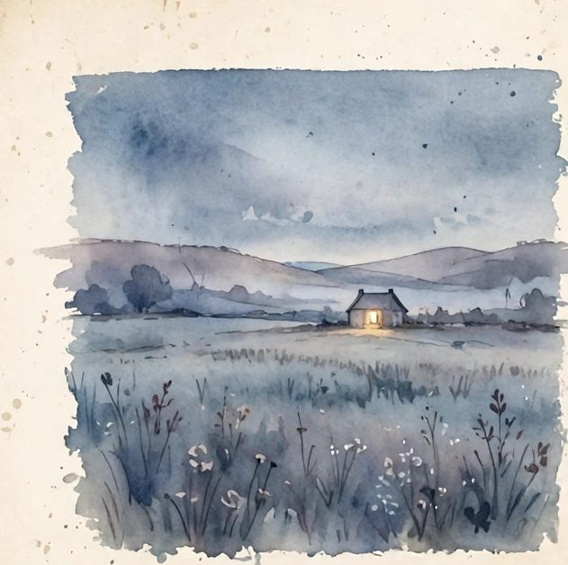
A single window seen from a distance across a field, lit softly in the blue hour.
From across the field, only one window can be seen, and the house prefers it that way for the purposes of this hall. The visitor is offered a glimpse, not a tour. A tour promises completeness. It opens every cupboard, explains every choice, and leaves the visitor with the illusion of full knowledge. A glimpse is more honest. It admits distance. It shows a lit rectangle, a suggestion of warmth, a hint of a room's arrangement, and it lets the rest remain unknown. The secret dream, approached at this range, keeps its dignity, and the person looking keeps a proper humility about how little can be known from outside.
The discipline of the glimpse protects the dreamer from a common harm. When a private picture is turned into a tour for others, it must be made consistent, furnished, and defensible. Gaps must be filled with invented detail. Questions must be answered that the dreamer has never asked. Soon the dream belongs more to its audience than to its owner. The Keeper will not conduct such tours. At the Window Desk, a few true details outrank a complete performance every time. A field, a blue hour, a single lit window. That is enough to establish that a life is imagined within the life, warmly and persistently, without surrendering the interior to inspection.
For the dreamer, the glimpse is also the right measure for most days. A whole afternoon spent touring the imagined house can leave the real house feeling thin by comparison. A glimpse, taken while crossing a field or pausing at a gate, works differently. It refreshes without displacing. It reminds the walker of a direction, the way a distant church bell reminds a village of the hour without requiring anyone to move house. The hall therefore trains a light touch. Look briefly. Receive what the light offers. Walk on, carrying the warmth rather than the floor plan, and let the window recede, kindly, into the blue.
11The Hall in One Sentence
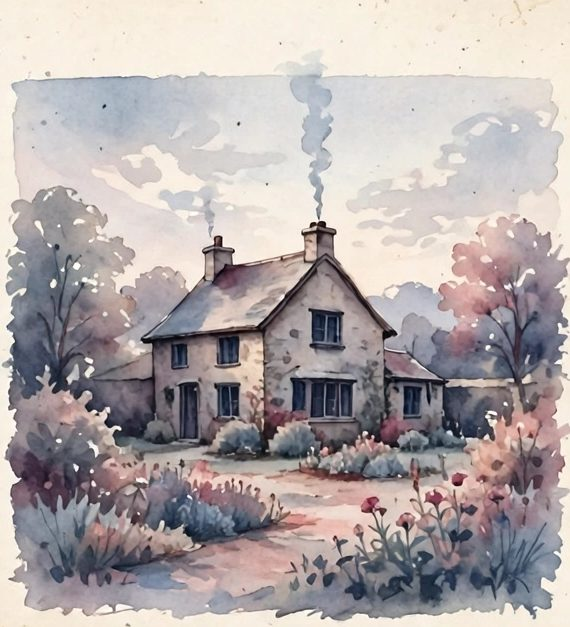
The whole dreamed house at dawn from its garden, every window quiet, smoke rising straight.
Halfway through the hall, the Keeper pauses and offers the whole subject in one sentence, for visitors who like to carry a line away with them. The sentence, as it stands in the register, is this. The life a person secretly dreams about is not an escape from the life being lived, but a quiet reading of its pace, its warmth, and its company, kept private so that it can keep giving directions without ever needing to become an address. The Keeper reads it aloud once, slowly, and then lets the silence after it do the remaining work of explanation.
Each part of the sentence earns its place. Pace comes first because so many entries in the register are really about time, about mornings that begin gently, work that proceeds at a human measure, evenings that are not entirely recovered from the day. Warmth follows, because the dreamed rooms are almost always warm in more than temperature, lit kindly, furnished plainly, free of performance. Company completes the reading, because nearly every picture includes a decision about who is near, a partner, a friend, a child grown and visiting, a neighbour at the fence, or, just as truly, a chosen solitude that is peaceful rather than lonely in its quality.
An address, by contrast, would end the sentence's usefulness. An address must be reached, purchased, maintained, and defended. A direction can be followed from anywhere, in any circumstances, starting this week. That is why the house returns to the sentence whenever the conversation grows heavy with maps and prices. The dream is read as directions, not as an address. Hold the sentence lightly and it will serve for years, through changes of work, town, and fortune. The smoke rises straight from the dreamed chimney in still air. The garden is quiet. The hall continues, at walking pace, toward the rooms themselves.
12The First Rule of the Quiet Windows
The first rule of the quiet windows is written on a card that hangs beside the Window Desk, where the Keeper can see it while writing. The rule is plain. Look honestly, record plainly, and promise nothing. Honest looking means admitting what the picture actually contains, even when it surprises the person looking. A dream of a very ordinary street, a modest trade, a life with fewer possessions and slower evenings, is recorded exactly as seen, without being dressed up into something more impressive for an imagined audience. The register has no column for impressiveness, a fact the Keeper mentions with quiet satisfaction.
Recording plainly is the second labour. Grand language has a way of inflating a dream until the dreamer no longer recognises it. The desk therefore favours concrete words. Not freedom in the abstract, but a Tuesday without meetings. Not success in the abstract, but a shelf of finished work made by hand. Not escape, but a lane, a dog asleep by the stove, a letter written without hurry. Plain recording keeps the dream portable. It can be reread years later and still understood, because it names things rather than moods. Moods pass. A named chair by a named window continues to instruct long after the mood that first revealed it has changed.
Promising nothing is the third labour, and the one that keeps the other two honest. The house sells nothing and promises nothing, and the rule extends that honesty to the dreamer. The register does not promise that the imagined life will arrive, in whole or in part, and it does not promise that following its directions will remove every sorrow from the lived life. What the rule protects is trust in the looking itself. A person who has not been promised an outcome can look again tomorrow without feeling cheated. The window stays a window, clean, curtained, and truthful, which is all the Keeper has ever claimed for it.
13The Imagined House
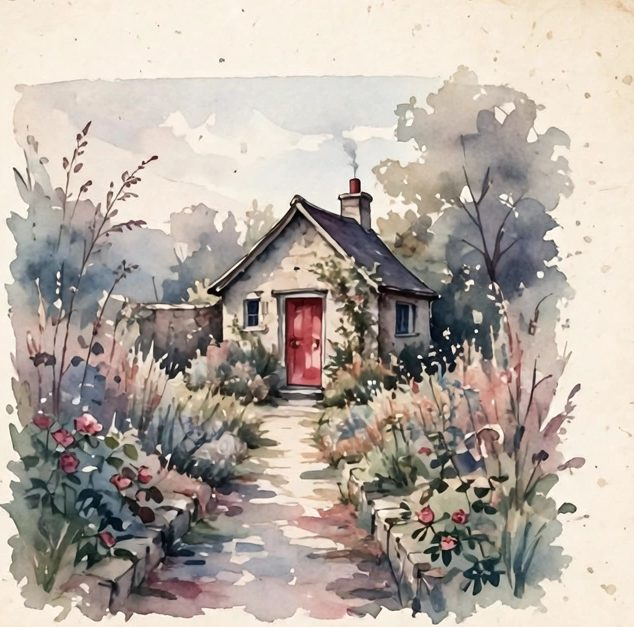
A small imagined house with a red door at the end of a lane, its garden unruly and loved.
With the second half of the hall, the walk moves from the window to the house beyond it, and the first view is from the lane. The imagined house is rarely large in the register. Again and again, the entries describe a small place at the end of a lane, a door painted a definite colour, a garden that is loved more than it is controlled. The Keeper finds this consistency instructive. When people picture the life they secretly dream about, they seldom picture vastness. They picture sufficiency, a place where there is enough room for the life itself and not much room left over for staging it.
The red door deserves a paragraph of its own, because a door is where the imagined life decides who may enter and on what terms. In the dreamed house, the door is neither barred nor permanently open. It opens to neighbours, to family, to the post, to a friend arriving with bread. It closes, without apology, for work, for rest, and for evenings that belong to the household alone. Many entries linger on this detail longer than on any room inside, as if the dreamers understood that a life is largely shaped at its threshold, by the rhythm of welcome and privacy that a single door, honestly kept, can provide across the years.
The unruly garden completes the portrait. Weeds appear in it. A bench sits where the sun actually falls rather than where a plan said it should. Something is always half finished, a bed half dug, a hedge half trimmed, and the house is untroubled by this. Perfection is not among the directions the dream is giving. What the garden teaches is attention spread over seasons, pleasure taken in growth that cannot be forced, and beauty that tolerates untidiness without surrendering to neglect. The Keeper closes the gate softly on this view. The imagined house is not a showpiece. It is a working picture of enough, coloured door, lived garden, and all.
14A Smaller House, Warmer
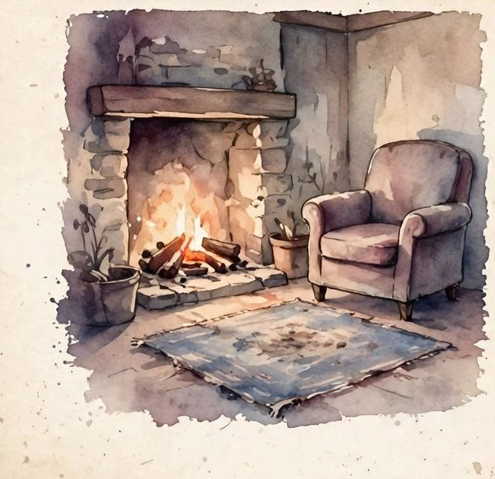
A small warm room with a low fire, one armchair, a rug worn thin in the middle.
The most repeated direction in the entire register can be written in four words. Smaller, and yet warmer. Person after person, picturing the dreamed life, reduces the size of the house and increases the quality of its warmth. Fewer rooms, better lit. Less distance between the kettle and the chair. A fire that one person can tend without help. The Keeper does not treat this as a fashion or a judgement on larger homes. It is read as a preference discovered by the imagination when it is free to choose comfort over display, and nearness over the labour of maintaining spaces that are seldom truly inhabited.
Warmth, in these entries, is only partly about the fire. It is also about the thickness of the quiet, the absence of echo, the feeling that a room holds its people the way a good coat holds its wearer. A small warm room asks little of its occupants. Voices can stay low. A conversation does not have to cross a hall. The rug worn thin in the middle records where life has actually passed, back and forth, between door and hearth, and the Keeper regards that worn path as the most honest decoration in the hall. Use, repeated kindly, makes a place warm in a way that purchase alone never quite manages.
There is a lesson here for the lived life as well, and the house states it without pressing it. If the direction is smaller and warmer, it can be followed without moving house at all. A corner can be made warmer. One room can be made the true centre of the evening. A fire, literal or otherwise, can be laid earlier and tended better. The dream, read as directions, is generous in this way. It does not demand the whole imagined house before it gives anything back. It offers a scale and a temperature, and invites the present rooms to learn from them, gradually, in the manner of all durable improvements.
15The Room with the Garden Door
Among the imagined rooms, one appears so often that the Keeper has given it a standing place in the hall. It is the room with the garden door, part sitting room, part working room, defined less by its furniture than by the door that stands in its far wall. Through that door the garden is not a view but a presence. Weather enters. Scent enters. The sound of rain on leaves enters. Work at the table inside is accompanied, all day, by the slow business of growing things outside, and the dreamers who picture this room almost always place their best chair where both the fire and the door can be seen.
The garden door changes the meaning of indoors. In many lived houses, the Keeper observes, inside and outside are kept as separate countries, visited in separate hours with separate clothes. The dreamed room joins them with a threshold that is crossed a dozen times a day without ceremony. A person steps out to cut herbs, to check the sky, to stand for a moment among the beds with a cup cooling in the hand. The dream here is not for wilderness or for grandeur. It is for continuity, a life in which the hands move easily between the page, the soil, the kettle, and the weather, without borders worth mentioning.
Read as a direction, the room with the garden door speaks about access. It asks whether the growing world is near enough to be part of ordinary attention, or whether it has been pushed to weekends and holidays. Even a window box, the register notes, is a small garden door of the mind. Even a single pot on a step changes a room's allegiance. The Keeper leaves the door of this room ajar as the walk continues, not from carelessness, but as the hall's quiet emblem. Between the life within walls and the life beyond them, the dreamed house prefers a passage, kept open, crossed often, and never locked against the seasons.
The Window Desk
One desk receives all correspondence for this house — questions, corrections, and word of any dream a visitor has been carrying quietly for a long while: the house never built, the work never taken up, the morning never once lived at the pace it deserved. It is read in the order it arrives, entered in the register of windows, and kept close.
16A Kitchen That Smells of Bread
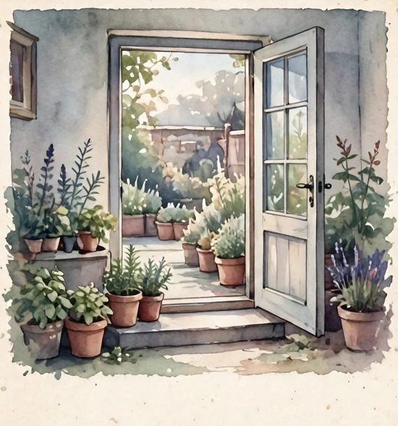
A room with a glass door standing open to a kitchen garden, herbs in pots on the step.
The kitchen of the dreamed house is identified in the register first by scent and only later by sight. It smells of bread. That single detail, repeated across many entries, carries more information than a list of fittings ever could. Bread means time taken in advance, dough left to rise while other work proceeds. It means a household rhythm in which nourishment is made, not merely acquired, and in which someone will be fed well at a table that expects them. The Keeper reads the scent as the dreamers' shorthand for a life paced by making, where the day is organised around processes that cannot be hurried and are better for it.
In the pictured kitchen, the equipment is plain and the light is good. A board, a knife that fits the hand, jars whose contents are known, a window over the sink so that washing up is done facing green rather than a wall. Nothing in the room is new for the sake of newness. The dream is notably uninterested in display models and matching sets. Its interest is in use that has become graceful through repetition, the economy of a cook who knows where everything lives. The house regards this plainness as a form of wealth. A kitchen that works calmly, every day, gives back more life than a splendid one that must be admired and maintained.
The bread, finally, is seldom imagined as eaten alone. Again and again the entries place another chair at the kitchen table, a neighbour drawn in by the scent, a child doing sums while the loaf cools, an old friend arriving at exactly the right hour. Company, in the dreamed life, gathers where the food is made rather than where the furniture is finest. The Keeper underlines this without commentary, because it completes a pattern the hall has been tracing from the start. Warmth, nearness, unhurried making, and welcome. The kitchen that smells of bread contains all four, in a single room, at the centre of the imagined house.
17The Porch Facing the Field
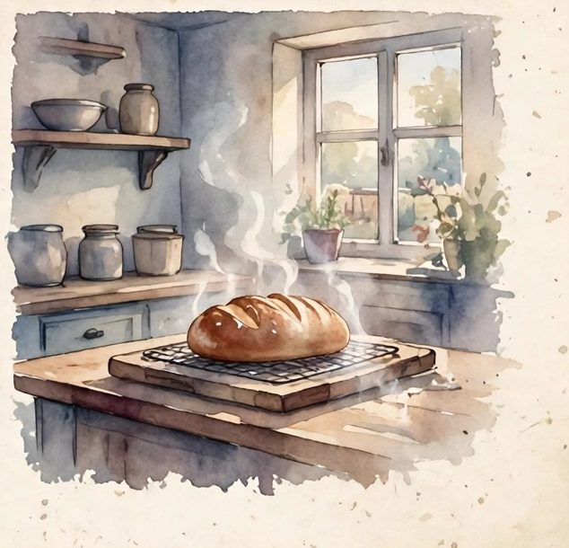
A kitchen with a loaf of bread cooling on a board, steam and morning light at the window.
Every imagined house in the register seems to require one place that is neither fully inside nor fully outside, and that place is the porch. The porch faces the field, which is to say it faces open time. Nothing is scheduled in a field at evening. The light changes, the birds settle, the air cools in its own order. To sit facing such a view, in the dreamed life, is to practise a particular kind of attention, receptive rather than acquisitive. The porch sitter is not improving the field, photographing it, or crossing it toward a goal. The field is simply regarded, and the regarding itself is counted as a good use of an hour.
The furniture of the porch is a bench, a lantern, perhaps a blanket folded over the rail. Its poverty is deliberate and instructive. A porch overfilled with equipment becomes another room to manage, and the dream consistently refuses that drift. What the porch offers cannot be upgraded. It offers a threshold seat, a little shelter overhead, and a prospect. The Keeper, who has read hundreds of these entries, notes that dreamers protect the porch with unusual firmness when invited to elaborate their houses. Enlarge the kitchen, they will say, or add a shelf of books. Leave the porch as it is. Its sufficiency, apparently, is the entire point of it.
No one is expected on the porch, and that phrase from the register may be the most restful in the hall. Much of lived life is organised around expectation, arrivals prepared for, impressions maintained, doors answered. The dreamed porch releases its sitter from the whole economy of expectation for a little while each day. Company, when it comes, is a pleasure and not a performance prepared in advance. Solitude, when it stays, is complete and not a failure of invitation. Facing the field, lantern lit, the imagined life rehearses a freedom that the real life can borrow in small measures, one unhurried evening at a time.
18No Rooms for Show
This part of the hall states one of the dreamed house's firmest principles. There are no rooms for show. Every room in the imagined house is used, daily or seasonally, and used in a way that leaves marks. The parlour kept for visitors who never come, the dining room preserved like a stage set, the spare room furnished for an ideal that the household does not actually hold, none of these survive the dreaming. When people are free to picture the life they secretly want, they quietly dismiss the audience from it. The rooms that remain are fewer, plainer, and alive with ordinary traffic from morning until night.
The Keeper connects this principle to the privacy that the hall has defended from its first window. A room for show exists for other people's judgement. A dream kept behind a quiet window has already declined that jurisdiction. It follows that its rooms would be arranged for use, comfort, and work rather than for effect. Chairs are placed where conversation actually happens. Books live where they are read. Tools are left within reach of the bench instead of being hidden to preserve an appearance. The register calls this honesty of arrangement, and notes how much labour it saves, since a room used honestly never has to be prepared before it can be enjoyed.
As a direction for the lived life, the principle is searching but kind. It does not require anyone to refurnish a house. It asks a simpler question, room by room, habit by habit. Is this kept for use, or for show. Is this hour, this purchase, this performance of busyness, serving the life itself, or serving an imagined observer of the life. The dreamed house answers with its worn rug, its ajar garden door, its plain kitchen, and its empty, sufficient porch. Nothing for show. Everything for living. The Keeper writes the principle down a second time, in smaller letters, as if to keep it from becoming a display in its own right.
19A Fire Already Laid
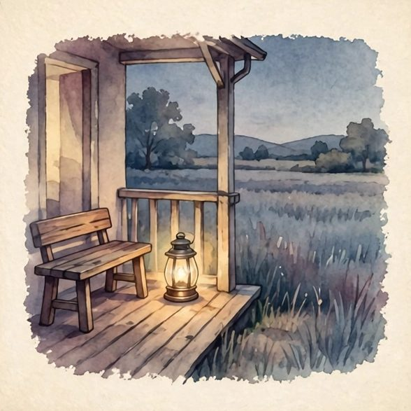
A porch facing an open field at evening, a bench and a lantern, no one expected.
Near the end of the hall stands a fireplace in which the kindling has already been laid, though the match beside it is still unstruck. The Keeper loves this image and returns to it often, because it holds the exact relationship the hall commends between the dreamed life and the lived one. Preparation without pressure. Readiness without demand. The fire is laid by someone who intends to be warm later and sees no virtue in fumbling with cold hands in the dark. It will be lit when the evening asks for it, and not a minute before, and its being ready changes the feeling of the room long before any flame appears.
Many entries in the register describe the dreamed life in just this tense, prepared but not yet begun. A workshop with tools set out. A desk with paper waiting. A boat covered against the rain, sound and ready for a season that has not opened. The house reads these pictures as mature rather than hesitant. The dreamers are not refusing to begin. They are honouring the stage before beginning, the stage in which materials are gathered, skills are quietly practised, and the shape of the thing is clarified by handling its beginnings. A fire already laid is a promise the present makes to the future without borrowing against it.
There is comfort, too, in the unlit match. It says that not everything prepared must be performed immediately to count as real. A life can hold readiness the way a mantel holds a match, calmly, for a long while, and be none the poorer for the waiting. When the hour comes, the lighting takes seconds. What took time was the laying, the choosing of dry wood, the building of the small structure that will catch. The Keeper leaves this fireplace exactly as found. To light it for effect would be to turn a direction into a demonstration, and the house, which sells nothing and promises nothing, does not deal in demonstrations.
20The Quiet End of the Lane
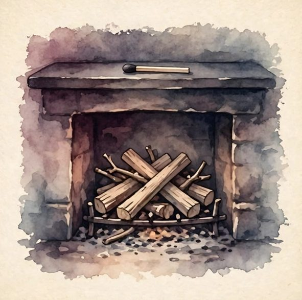
A fireplace with kindling laid and ready, an unlit match resting on the mantel.
The hall ends where the imagined lane ends, in quiet. There is no gate ceremony, no summary carved in stone, no final window thrown open to reveal a lesson. The Keeper simply walks the visitor back along the path as the light thins, past the porch, past the kitchen garden, past the red door now closed for the evening. The dreamed house settles behind its windows for the night, not displayed, not explained, merely kept. If the walk has done its work, the visitor carries away no plan and no purchase, only a slightly clearer sense of directions, pace, warmth, and company, to be consulted in ordinary weeks ahead.
What remains, after twenty windows, is a practice rather than a conclusion. Look, now and then, through the quiet window. Record plainly at whatever desk is available, in a notebook, in a conversation held in trust, or only in thought kept carefully. Let privacy protect the picture while it is tender. Refuse to turn it into a debt, a tour, or a room for show. Borrow from it in small, honest measures, a warmer corner, a slower morning, a door opened more easily between the working room and the growing world. The directions were never demanding to be followed all at once. They were offering to be followed at all.
The Keeper closes the register for the day and writes the footer of the hall on its final page, in the same even hand as everything else. Dreamed softly, kept close. The words are not a slogan, and the house does not repeat them for effect. They are a record of method. Softly, because the dream does its best work at low volume, in dawn light and blue hours, without announcement. Kept close, because closeness is what privacy means when it is chosen with care, a letter folded, a curtain drawn, a window tended by a keeper who understands that the most durable things in a life are often the ones that were never required to perform in public.
21Windows Lit from Inside
From the lane at evening, the house is known first by its windows. They are lit from inside, not brightly, but with the steady warmth of rooms that are being lived in at an unhurried pace. The Keeper of the Quiet Windows notes that a lit window says very little, and that is its kindness. It does not describe the life behind the glass, or explain it, or invite judgment upon it. It simply shows that someone is home, that the day has come indoors, and that the evening has begun in its own good time, without announcement and without display.
In the secretly dreamed life, the windows are not lit to be seen. Nobody stands across the lane admiring them, and nobody needs to. Their light is a byproduct of ordinary things, a lamp beside a chair, a stove still warm, a book left open on a table. The house keeps this doctrine quietly and without effort. Warmth comes first, and the glow follows. Company comes first, and the room feels inhabited. The image is never chased for its own sake, because an image chased too hard stops being a picture of a life and becomes a performance of one.
The register at the Window Desk records the hour when the lamps are lit, and the hour changes slowly with the seasons. In winter it comes early, and the house closes around itself like hands around a cup. In summer it comes late, after long light has done its work in the garden and on the lane. Either way, the moment is unremarkable, and that is the point the Keeper returns to. A life that can be lit from inside, evening after evening, without ceremony, has already found much of what the dream was quietly asking for all along.
22A House That Asks Less
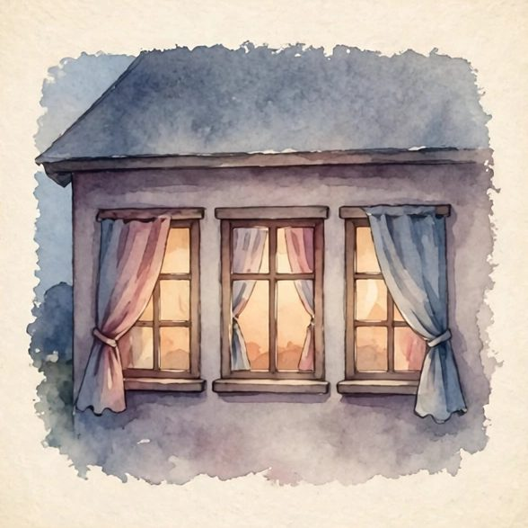
Three windows of a small house lit warmly from inside, curtains open to the dusk.
The imagined house is smaller than the house that is often described in daylight conversation. It has fewer rooms, and each room has fewer things in it, and the things it has are known well. The Keeper observes that a house which asks less gives more room to the people inside it. There is less to clean, less to repair, less to pay for, and less to worry over in the night. What remains is not emptiness. What remains is space that has been deliberately left unfilled, so that a morning can spread out in it and an evening can settle.
Asking less is a discipline the house practices in plain ways. The roof is sound and simple. The floors are wood that can be swept. The cupboards hold enough and no more, so that nothing hides at the back forgotten and reproachful. When something breaks, it can usually be mended by hand or by a neighbour who knows the work. The house does not demand constant improvement, and it does not compare itself with larger houses on busier streets. It stands in its lane, content with its size, and lets the life inside it be the interesting part.
The dream, the register notes, asks little and demands nothing, and the house has learned the same manners. It does not promise that a smaller life will solve every sorrow, and it sells nothing to the person who imagines it. It offers only a proportion, a fit between shelter and need that leaves energy over for other things. In that leftover energy the dreamed life actually happens, in conversation, in rest, in work done slowly, in afternoons that are not spent maintaining a building. The house asks less so that the day can ask less too.
23The Imagined House, Walked Slowly
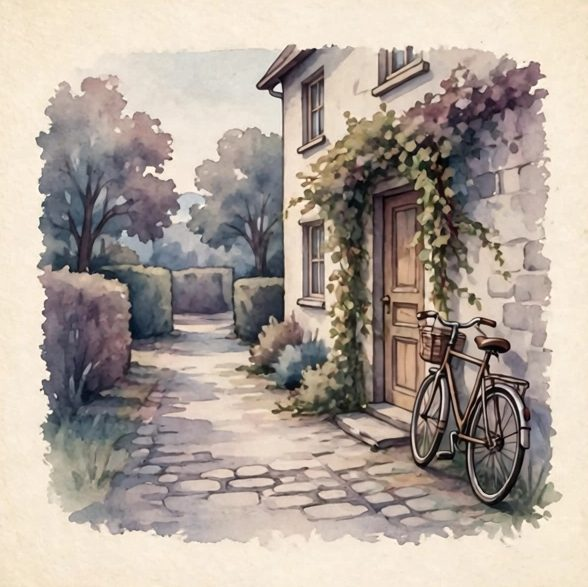
A narrow house at the quiet end of a lane, ivy at the door, a bicycle leaning by the wall.
The Keeper invites the visitor to walk the imagined house slowly, the way one walks a familiar street after a long absence. First the door, which opens without sticking. Then the small hall, where coats hang on pegs and shoes stand in a row, damp in wet weather. Then the kitchen, which is also the warmest room, with a table that has held ten thousand ordinary meals and shows every one of them in its surface. Nothing here is new, and nothing here apologises for that. Each room is passed through at walking pace, and each is allowed its full moment.
Upstairs the rooms are smaller and quieter, as upstairs rooms tend to be. A bed made plainly. A chair for clothes. A shelf with a few books that are actually read, their spines softened. The window looks over roofs and a strip of garden, and in the distance, water or hills, depending on where the dreamer happens to live. The Keeper points out that the view is not grand, and that grandness was never requested. What was requested was a view that changes slowly, with weather and season, so that looking out of the window remains a small daily event rather than a picture already memorised.
The walk ends where it began, at the door, and the whole tour has taken only a few minutes. That brevity is part of the house and part of its teaching. A life does not need many rooms to be complete, and a house does not need to impress a visitor to shelter one well. Walked slowly, the imagined house shows its real dimensions, which are measured in pace and warmth and company rather than in floor space. The square metres are modest. The hours inside them, the register insists, are not modest at all.
24What the House Is Really About
After the rooms have been walked and the windows counted, the Keeper asks the plain question that the whole house was built to hold. What is it really about. The answer, when it comes, is never a thing. Nobody dreams this house for its beams or its garden or its quiet lane, pleasant as those are. The beams stand for shelter that does not need to be earned again each month. The garden stands for time that grows things slowly. The lane stands for neighbours who know a name and use it kindly, and for distance from noise that never stops asking for attention.
The house is an image of pace before it is an image of property. Inside it, mornings are not seized and evenings are not collapsed into. Meals take the time meals take. Conversations are allowed to wander and come back. The Keeper has seen many versions of the dream recorded at the Window Desk, in many hands, from many kinds of lives, and the details differ each time, but the pace underneath them is nearly always the same. Slower than the present pace. Gentler than the present pace. A pace at which a person can hear themselves think, and hear the people they live with actually speak.
It is also an image of company, and of warmth, in that order of importance. A house dreamed alone is usually dreamed with someone in the next room, or expected at the gate, or remembered at the table. The warmth is literal, a fire and a kettle, and it is also the other kind, the feeling of being expected and welcome. The house sells nothing and promises nothing, the Keeper writes, and then underlines the line. It is a picture a person keeps behind a quiet window, not a plan, not a debt, and not a reproach against the life being lived now.
25The Imagined Work
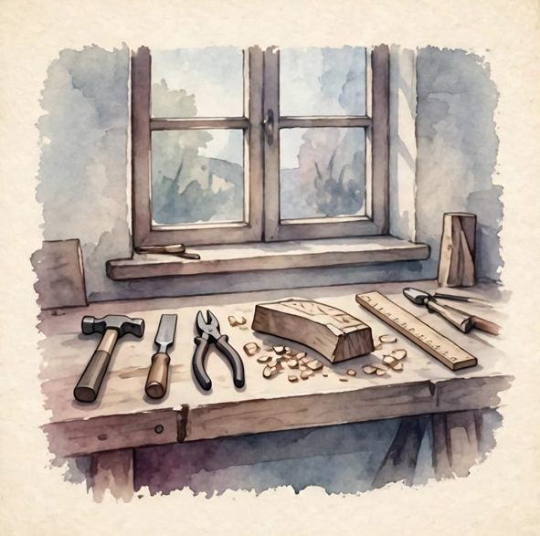
A workbench by a window with tools laid in a row, one piece of wood half shaped.
In the secretly dreamed life, the work has a bench, a window, and a material that can be held in the hands. The Keeper notes how often the register describes work this way, even when the dreamer spends real days far from any bench. The imagined work is not a title or a position. It is wood half shaped, dough rising under a cloth, a garden row half weeded, a page half written. Something is visibly underway, and its progress can be seen at a glance, and that visibility is a large part of what the dream is reaching toward.
The work begins when the light is good and the hands are ready, not when a bell rings in another building. It has a shape to the day that the worker has chosen, or at least agreed to, which makes a quiet difference to everything that follows. There is time in it to do the task properly, and time to stop and look at it, and time to begin again where it went wrong. The Keeper records no version of this dream in which the work is frantic. Frantic work exists in plenty elsewhere, and the window is not kept open for it here.
Above all, the imagined work is sized to a human being. One person can hold the whole of it in mind, from the first cut to the finished piece, and can say truthfully that their hands made the difference between the beginning and the end. That wholeness is rare enough in ordinary working life that people dream about it behind quiet windows for years. The house makes no judgement about that. It keeps the bench by the window, the tools in their row, and the half shaped piece waiting, as an image of work at a scale a life can actually contain.
26Work at a Human Pace
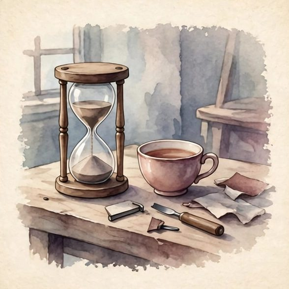
An hourglass and a teacup on a workbench, the day measured gently, tools at rest.
The hourglass on the bench is not there to hurry anyone. It is there because sand falls at a pace that cannot be argued with, and watching it is a reminder that time in the workshop is measured in attention rather than in urgency. A human pace, the Keeper writes, is the pace at which good work and a steady breathing rate can coexist. It allows a cut to be lined up before it is made. It allows a question to be asked of the material, and time given for the material to answer in grain, in weight, in resistance.
At a human pace, rest is not stolen from the work but built into its rhythm, the way rests are built into music and give the notes their meaning. The teacup on the bench is not an interruption. It is part of the method. Standing back with tea in hand, the worker sees the piece whole again, notices the line that has drifted, remembers what the thing is for. Many faults are prevented in those pauses, and many good decisions are quietly made in them, without a single tool being lifted. The register counts the pauses as work, and the house has always agreed.
Nothing in the dreamed workshop is measured against the speed of a machine, or against another worker in another town whose bench cannot be seen. Comparison, the Keeper observes, is a fast way to make a good pace feel like failure. The work asks only to be done well within the day that holds it, and the day, in this dream, is long enough for that and for an evening afterwards. A pace that leaves a person intact at the end of it is not a slow pace. It is simply a pace that was designed, from the beginning, for a person.
27Hands That Know the Material
There is a kind of knowledge that lives in the hands and nowhere else, and the dreamed life makes room for it. Hands that know the material can tell by touch whether the wood is ready, whether the dough has had enough, whether the edge is sharp or only pretending to be. This knowledge cannot be hurried into existence and cannot be read out of a book in an evening. It arrives slowly, through repetition, through small mistakes felt in the fingertips, through years of paying a particular kind of attention that the rest of the world rarely asks for anymore.
The Keeper values this knowledge because it makes the worker and the work belong to each other. A person whose hands know the material does not stand over the task as a stranger giving orders. They are in conversation with it. The material resists here, yields there, suggests a different line, and the hands adjust without resentment. In the register, dreamers describe this feeling with unusual care, as if naming something they have missed for a long time. To be skilled at something tangible, they write, is to be at home in at least one corner of the world.
The house is careful not to romanticise roughness or make a virtue of blisters. Hands that know the material are cared for in the dream, washed at the sink, rested in the evening, warmed by the fire like any other part of a person. Skill is not suffering, the Keeper notes, and the window is not open to that confusion. What the dream honours is competence earned patiently, the quiet confidence of touch, and the dignity of knowing, without asking anyone, whether the work in front of you is true. That knowledge, once learned, stays with a person for life.
28A Workshop with One Window
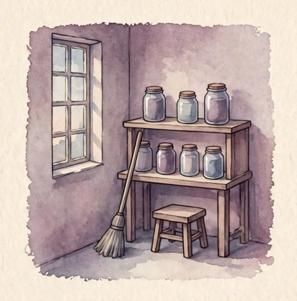
A small workshop with one tall window, a stool, a broom, and shelves of plain jars.
The workshop in the dream has one window, and the Keeper has come to believe the number matters. One window gives the room its light and its weather and its sense of the hour, and it gives the worker one place to look up to. More windows would make the room a viewing platform. None would make it a cellar. One is the proportion of a place meant for attention, where the outside world is present but not performing, and where the bench receives the best of the daylight because the whole room was arranged around that single source.
Everything else in the workshop is plain, and plainness here is a form of respect for the work. A stool that can be sat on all morning. A broom that stands ready because the floor is swept daily and the sweeping is part of the craft. Shelves of plain jars holding screws, seeds, buttons, nails, each labelled in a hand that only one person needs to read. Nothing is displayed. Nothing is arranged for a visitor who might one day be impressed. The room is a tool itself, shaped over time to fit one worker and one kind of work, and it fits the way a good shoe fits.
In the evening the one window darkens first, and that is how the worker knows the day is ending before any clock says so. Light leaves the bench gradually, giving fair warning, and the tools are put away while there is still enough to see by. The Keeper records this as one of the gentlest arrangements in the whole imagined house, a room that tells the truth about time. The workshop does not keep its worker late with artificial brightness and one more urgent task. It dims, it cools, it quiets, and it lets the person go home.
29Work That Ends at Evening
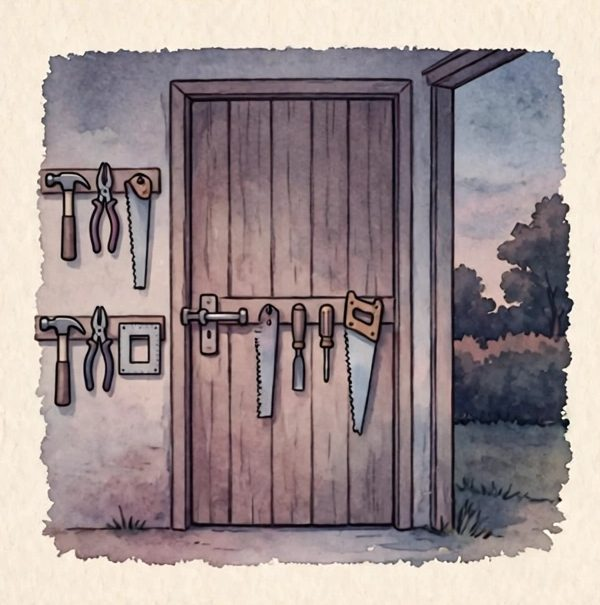
A workshop door closed at evening, tools hung in order, light going down outside.
The most repeated sentence in the register, the Keeper says, is some version of this one. The work ended, and the evening was still mine. In the secretly dreamed life, work has a closing time that belongs to the rhythm of the day rather than to the demands of strangers in other time zones. The tools are hung in order, the bench is brushed down, the door is closed, and the closing is real. Nothing follows the worker home in a pocket, glowing and asking. Nothing waits at the table, disguised as rest, still quietly doing the work of the day.
This ending is not laziness, and the house is firm on the point. The day that ends at evening has usually been a full day, begun early, worked steadily, with the satisfaction of visible progress in it. The difference is that its fullness has a boundary, and the boundary is defended kindly and without apology. An evening that is genuinely free restores the hands and the temper in a way that a half evening, spent recovering while still half attending, never quite manages. The dream asks for whole evenings the way it asks for whole days, as units a life can actually be lived in.
When the workshop door closes, the other rooms of the imagined house take over, and they have their own claims. A meal is cooked slowly. A chair by the fire is sat in without guilt. Company, which the dream values above nearly everything, gets the hours that are left, and gets them from a person who is actually present. Work that ends at evening, the Keeper writes in the margin of the register, is not work that matters less. It is work that has been given its proper size, neither the whole of the life nor a stranger to it.
30Being Good at a Small Thing
The dream rarely asks for greatness, and the Keeper finds this one of its healthiest signs. What it asks for, again and again, is to be good at a small thing. To make the stool that does not wobble. To bake the loaf the street asks about. To mend the gate so it swings true for another ten years. A small thing done well has a completeness that large ambitions often lack, because it can be finished, and used, and seen in use, by the maker, on the same day it was made, in the ordinary course of a life.
Being good at a small thing also gives a person a place to stand that does not depend on opinion. Fashions move, committees change their minds, audiences wander away, but a true joint is a true joint. The Keeper has read entries at the Window Desk from people whose working lives are spent in matters too large and abstract for anyone to judge plainly, and their longing is not for fame. It is for a standard they can feel under their own hands, a yes or no that does not require a meeting. Small work gives that standard a home.
The house adds one caution, in its usual even tone. A small thing is not a small life, and being good at it is not a retreat from the world. The stool holds a grandparent reaching a high shelf and a child standing to see the stove. The loaf feeds whoever is at the table. Skill at small scale travels outward quietly, through use, through gifts, through teaching a neighbour the grip that makes the work easier. The dream keeps the thing small, the Keeper concludes, precisely so that its goodness can be whole.
The Window Desk
One desk receives all correspondence for this house — questions, corrections, and word of any dream a visitor has been carrying quietly for a long while: the house never built, the work never taken up, the morning never once lived at the pace it deserved. It is read in the order it arrives, entered in the register of windows, and kept close.
31No Audience at the Bench
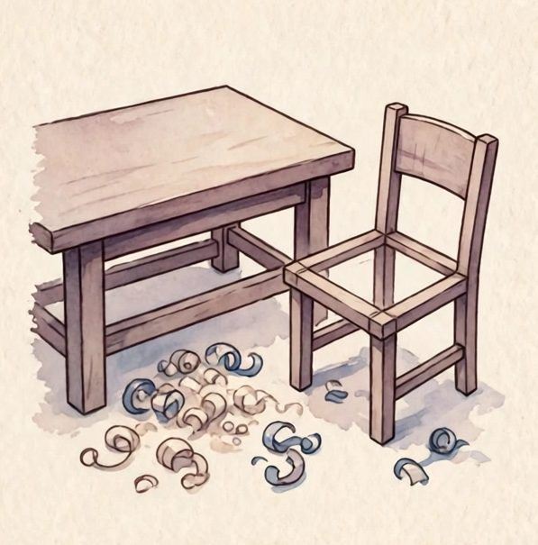
A plain bench with a half-made chair beside it, shavings curled on the floor.
No one is watching at the bench in the dreamed workshop, and the absence is deliberate. There is no audience to impress, no count to keep, no record being made of the hours except the work itself, standing or leaning where it was left. The Keeper observes how much of ordinary life is now performed slightly outward, angled toward an imagined witness, and how tiring that angle becomes by evening. At this bench the angle is gone. The half-made chair does not need to be explained to anyone. It can simply be unfinished, in peace, until tomorrow.
Without an audience, the work recovers its privacy, and privacy changes the quality of attention in ways the register describes with relief. A mistake is just information. An experiment is allowed to fail quietly and teach its lesson without witnesses. The worker can follow an odd idea for an hour, a shaped curve, a different joint, and if it leads nowhere, the shavings are swept up and nothing has been lost but time that was freely given. The Keeper calls this the workshop equivalent of thinking aloud in an empty room, and considers it essential to any craft that hopes to grow.
The house does not suggest that all work should be hidden, or that sharing skill is anything but generous. Finished things leave the workshop and are gladly seen, used, sat on, eaten from, given away. The privacy belongs to the making, not to the made. It protects the slow middle of the work, where a thing is not yet itself and should not have to perform being itself. Behind the quiet window, the Keeper writes, the dreamer is not hiding from the world. They are giving the work the same shelter they once wished someone had given them.
32The Work Nobody Counts
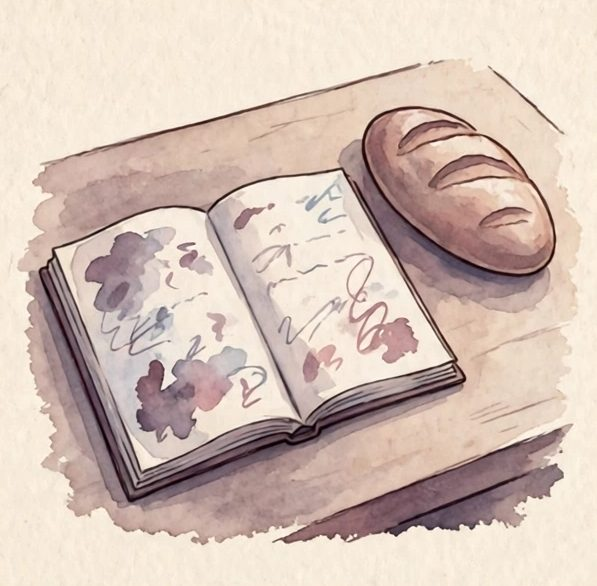
A ledger and a loaf on a worktable, the day's plain accounts beside the day's plain bread.
Much of the work in the imagined life is work nobody counts. The sweeping, the sharpening, the mending of the tool before the tool can mend anything else. The accounts kept plainly in a ledger, in a clear hand, so that the small business of the bench owes no surprises to anyone. The loaf made for the house while another is made for a neighbour. None of this appears in any report, and the Keeper notes that the dream does not resent the fact. It seems, if anything, to prefer the uncounted hours and to trust them more.
Uncounted work has a freedom that measured work rarely enjoys. It can take exactly as long as it takes. The knife is sharpened properly, not adequately. The ledger is balanced to the last small coin, not because anyone will audit it, but because a clear account is a quiet mind at the end of the day. In the register, dreamers write about this kind of work the way other people write about holidays. It is the part of the day when nobody is keeping score, and therefore the part when the worker most fully belongs to themselves and to the task.
The house honours the loaf beside the ledger as the true summary of such a day. Bread and accounts, sustenance and honesty, side by side on the same table, neither one pretending to be more important than the other. A life in which the plain work is done plainly, the Keeper writes, does not need to justify itself at length to anybody. It adds up the way the ledger adds up, entry by entry, day by day, until the total, looked at over years, is recognisably a life that was lived on purpose, at a human pace, in good order.
33A Craft Learned Slowly
The craft in the dream is never mastered in a season, and nobody in the register expects it to be. It is learned slowly, the way languages and gardens are learned, by returning to it more days than not, over years that are allowed to pass at their natural speed. The early pieces are kept on a shelf rather than hidden, each one a little truer than the last, and the Keeper remarks on how gently the dream treats its own beginnings. There is no shame in the first wobbling stool. It held weight, eventually, and it taught the hands what the second one needed.
Slowness in learning is not inefficiency here. It is the method by which the knowledge enters the hands instead of merely visiting the head. A joint practised fifty times across fifty mornings becomes a different thing from a joint understood once, clearly, in an afternoon. The dreamed life understands this and builds its years around it, allowing a person to be a beginner for as long as beginning takes, without the humiliation that faster worlds attach to the word. The window stays open for the apprentice in everyone, whatever age the apprentice happens to be.
There is also company in a craft learned slowly, because crafts have elders the way villages do. Someone always knows the trick of the grain, the order of the steps, the reason the old way is the old way. The dream often places such a person nearby, not lecturing, just working at the next bench, available to a question asked at the right moment. Knowledge passed hand to hand like that, the Keeper writes, is one of the oldest forms of warmth there is. The house keeps a stool for the teacher and a stool for the learner, and considers both pieces of furniture essential.
34Work That Leaves the Day Intact
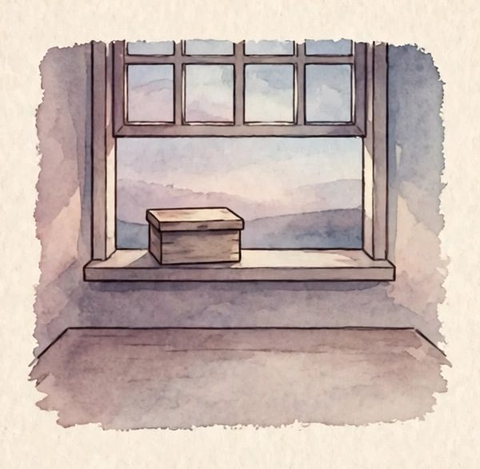
A window above a workbench with a finished small box set on the sill to dry.
The test of the imagined work, the Keeper says, is what it leaves behind besides its products. Work that leaves the day intact leaves a person with an afternoon still usable, a temper still even, hands that can still play an instrument or hold a child or turn pages. It does not consume the whole of the one who does it and call the consumption dedication. The finished box on the sill is a good day made visible, but the greater achievement, invisible in the picture, is everything else in the day that the work did not take.
This is a design principle, not an accident, and the house treats it as seriously as the roof. The work is sized to the day, the day is sized to the person, and the person is not the smallest unit in the arrangement. Breaks are real breaks. The bench is left at the hour agreed, even mid task, because the task will keep and the evening will not. In the register, dreamers return to this point with something like gratitude, as if describing a kindness they once received and never forgot. Work, in the dream, is a good host. It knows when to end the visit.
A day left intact can hold more than work, and the dreamed life fills the remainder without frantic planning. There is room for the walk, the neighbour at the gate, the long meal, the hour of doing nothing in particular by the fire. None of these are rewards for the work, the Keeper insists, because a life arranged as endless payment and reward is just another ledger, and not the good kind. They are simply the rest of the day, belonging to the same person, and the work is honoured partly by the fact that it never tried to take them.
35The Pride of the Plain Job
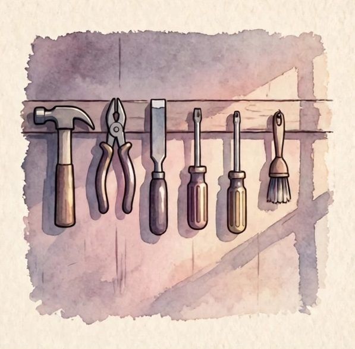
A row of plain tools hung on hooks at rest, evening light across their handles.
There is a pride that does not need to raise its voice, and the dreamed workshop is full of it. It lives in the row of plain tools hung on their hooks at rest, handles worn smooth where hands have held them for years. The pride of the plain job is not in being noticed. It is in knowing, privately and completely, that the work was done as well as the worker knew how to do it, and that the knowing does not depend on anyone confirming it. The Keeper calls this the steadiest form of self respect the register contains.
Plain jobs make up most of a life, when a life is looked at honestly, and the dream refuses to treat them as the price paid for rarer, finer moments. The floor swept well is well. The hinge oiled before it complained, the account written up on the day itself, the chair leg glued before the wobble became a fall, these are the small fidelities that hold a household together. To take pride in them is not to settle for less, the house argues. It is to have understood where lives are actually built, which is almost never at the grand occasion and almost always at the bench, the sink, the desk, the door.
Evening light across the tool handles is the right medal for such work, the Keeper writes, because it arrives without ceremony and asks for no speech. The tools rest. The worker rests. The job stands finished in the corner, being useful already, saying nothing. In the secretly dreamed life, a person wants more evenings that feel like this, earned plainly and ended quietly, than they want any single triumph the neighbours might hear about. The register closes the day on that note more often than on any other, and the house has learned to trust the pattern.
36What the Work Is Really About
The Keeper, having walked the workshop as the house was walked before it, asks the same plain question of the work. What is it really about. And again the answer is never the product. The box, the chair, the loaf are welcome, and useful, and given away with pleasure, but they are the excuse rather than the reason. The reason is a day with a shape. A reason to rise at a kind hour, a task that asks for the hands and the attention together, a rhythm that carries a person through the middle of life the way a path carries a walker through a wood.
The work is about pace and company, as the house was, because in the dream they are the same subject seen from two windows. Pace, because work done at a human rhythm gives the years a texture that can be remembered, day distinct from day by what was made and mended. Company, because even solitary craft sits inside a web of others, the one who taught it, the one who will use its products, the neighbour whose bench can be heard through the wall. Nobody in the register dreams of working entirely beyond the reach of other people. They dream of working among them, at a kinder distance and a slower speed.
Finally, the work is about enough, and the house considers this its most quietly radical page. Enough income to keep the roof sound and the table honest. Enough challenge to keep the hands learning. Enough left over, of time and strength, for everything the work is not. The dream asks little and demands nothing, and its work promises nothing either, not success, not recognition, not a transformed life by spring. It offers a bench, a window, a material, and a day that ends intact. Behind the quiet window, the Keeper writes, that has always been offer enough.
37The Imagined Morning
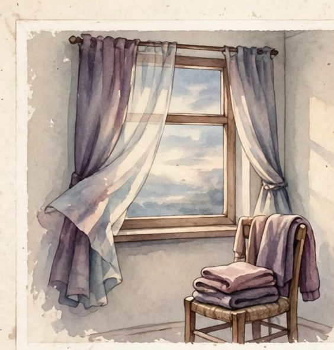
A bedroom window at dawn, curtains stirring, a chair with clothes folded over its back.
The imagined morning begins before any demand is made on it, and that head start is the whole luxury. The curtains stir at the bedroom window, the light comes up in its own grey and then gold order, and the person in the bed surfaces slowly, the way a swimmer surfaces, without being pulled. The clothes folded over the chair were laid out the night before by someone thinking kindly about this exact moment. Nothing about the scene is expensive, the Keeper notes. Its wealth is entirely in the absence of hurry, which is the one currency the dreamed life spends with real generosity.
There is no device glowing on the table in this version of the morning, or if there is, it knows its place and keeps it until after tea. The first information of the day comes from the window, the weather, the birds, the state of the lane. The register is full of this preference, written in many hands, for a day whose first voice is the world immediately outside rather than every voice in the world at once. The house approves of the arrangement without making a rule of it. Rules about mornings, the Keeper writes, tend to become one more thing the morning must survive.
From that slow beginning, the whole day inherits its pace, the way a river inherits the slope of its source. Breakfast is eaten sitting down. The work, when it starts, starts whole, because the person arriving at the bench has not already spent themselves on an hour of urgency in the dark. The imagined morning is not a retreat from the day. It is the day's foundation trench, dug at the right depth, in the quiet, before anyone asks anything at all. The rest of the dreamed life is built on it, and built, the house believes, to last.
38The Hour Before Anyone Asks
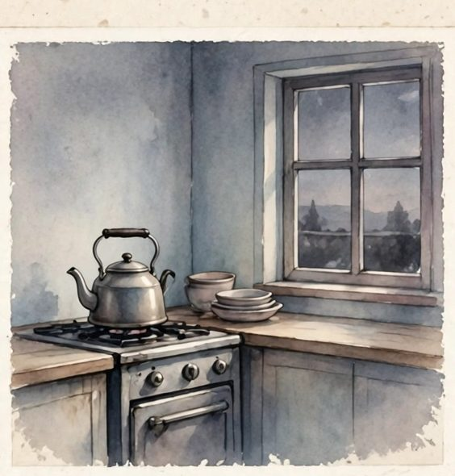
An empty kitchen before sunrise, a kettle on the stove, first grey light at the window.
There is an hour, in the imagined life, that belongs to no one but the person awake inside it. The kitchen is empty, the kettle is on, the light at the window is still deciding what colour the day will be. Nobody needs anything yet. No question has been asked, no favour requested, no news delivered. The Keeper calls this the hour before anyone asks, and treats it in the register as a room of the house in its own right, though it is made of time rather than walls, and must be rebuilt every morning by the simple act of rising into it.
What happens in the hour is deliberately unremarkable. Tea is made. A chair is sat in. Yesterday is thought about, briefly and without prosecution, and today is considered in the rough, the way a field is considered before the ploughing is planned in detail. Some dreamers write in the hour, a page, a list, a letter begun. Others, the Keeper notes with approval, do nothing that could be described at all, and guard the nothing carefully, because an hour that must justify itself has already been handed over to the askers, and the whole point of this one is that it has not.
The hour ends the way the workshop day ends, by light rather than by alarm of the spirit. The house stirs. A door opens somewhere, a voice calls something ordinary, and the day of being needed begins, willingly enough, because the first hour was kept. The dreamed life does not ask for a day without demands, the register concludes. It asks for one hour in front of them, unclaimed, in which a person can remember that they are a person before they are an answer. Everything else in the day is easier to give, after that hour has been kept.
39Light Coming Up Slowly
The light in the dreamed country comes up slowly, and nobody complains about the speed of it. Grey first, along the fence and between the garden beds, then a thinning of the dark rather than a victory over it, then colour returning to things in the order they were lost the night before. The Keeper has noticed that dreamers linger over dawn in their entries far more than over any blaze of noon. A slow dawn matches the pace the whole house is built on. It allows the eyes, and the person behind them, to adjust by degrees, which is how all lasting adjustments are made.
Slow light is honest light. It shows the garden as it is, the path needing gravel, the bed needing weeding, and it shows these things gently, before the day has gathered the strength to turn them into accusations. Under it, the morning's work appears one task at a time instead of all at once, and that sequencing is a mercy the register mentions often. People do not dream of a life without tasks. They dream of tasks arriving in an order a person can meet, lit one by one, the way the sun reaches one bed of the garden and then, in its own time, the next.
By the time the light is fully up, the house is fully awake, and the two events have been allowed to be the same event. That is the whole teaching of this page, and the Keeper states it without decoration. A life paced to the light needs fewer alarms of every kind. Meals, work, rest and company each have their natural hour, discovered long ago by people who had no other clock, and the dreamed life, behind its quiet window, is largely a wish to live by those hours again, in a world that has forgotten how recently they were simply the hours everyone kept.
40Tea Before Words
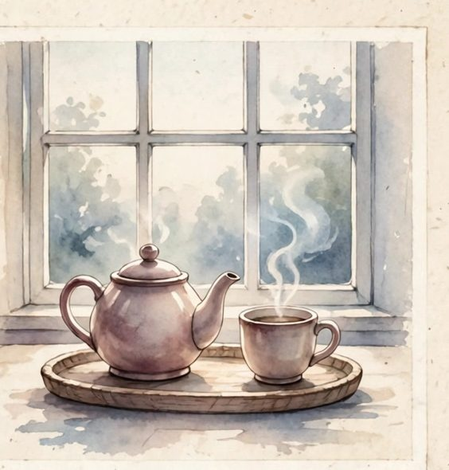
A teapot and one cup on a tray by a bright window, steam rising in the early light.
Before words, in the imagined house, there is tea. The tray is carried to the bright window, the pot is poured, the steam rises and does its brief, beautiful work in the early light, and the first cup is drunk in a silence that nobody in the house experiences as empty. The Keeper regards this small ceremony as load-bearing. Words spoken before tea tend to belong to the night, to its dreams and worries and unfinished arguments. Words spoken after tea belong to the day. The cup is the border between them, and the house crosses it slowly and on purpose.
Tea before words is also a courtesy, extended to whoever else is waking under the same roof. It says that no one will be met, first thing, with a request or a report or a grievance carried over from yesterday. They will be met, when they appear, by someone already settled, already warmed, already returned to themselves, and the first exchange of the day can be small and kind because it does not have to carry the whole weight of the morning. In the register, couples and households and solitary dreamers alike record this preference, and always in nearly the same plain language.
The house sells nothing and promises nothing, and tea, fittingly, is the cheapest sacrament it owns. Leaves, water, heat, time. The time is the ingredient the dreamed life is richest in, and it gives that time first to itself, at the window, before giving it to the bench, the lane, and the world beyond the gate. When the cup is empty, words can begin, and work can begin, and the day can ask what it needs to ask. The Keeper closes the register on the sound of a first sentence, spoken easily, by a person who was allowed to arrive at it.
41A Walk Around the Garden
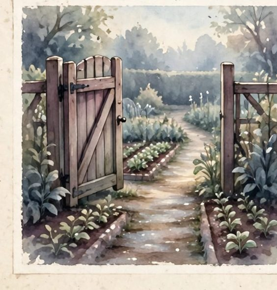
A garden gate open at dawn, a path dew-wet between rows of sleeping plants.
The Keeper opens this part of the house with a garden, not because a garden is grand, but because it asks for a pace that cannot be hurried. In the dreamed life, the morning begins with a slow round between the beds, the path still wet, the air still cool, and no errand waiting at the gate. The walk is not exercise and it is not inspection. It is a way of arriving in the day by passing, one by one, the small living things that have kept their own quiet through the night.
The house notes that many dreamed mornings fail at this exact point. The sleeper imagines a beautiful garden and then imagines tending it in a rush, with lists and worries carried out among the rows. The register corrects this gently. In this garden, the first round is for looking only. What has opened, what has leaned, what needs water later, all of this can wait until the second round. The first round belongs to noticing, and noticing, done slowly, changes the temper of everything that follows it.
A visitor at The Window Desk sometimes asks whether the garden is a symbol, and the Keeper answers that it is simply a garden. There are beans in the dream, and herbs, and a bench that holds the morning sun for a little while. The point is not hidden. A life that begins with a walk around its own small ground begins in possession of itself. The gate is open, the path is wet, and the day has not yet asked for anything at all.
42The Day Opened Like a Letter
In the dreamed life, the day comes the way a letter comes, arriving whole but meant to be opened slowly, in order, without skipping to the end. The Keeper has written this image into the register because it corrects a common habit of the waking hours. Many people open the day all at once, every demand read in the first minute, every worry unfolded before the feet have found the floor. The dream proposes another order. First the envelope. Then the tea. Then, only then, the page.
The house holds that a letter deserves a settled reader. News read standing up, in haste, lands differently than news read seated, with the morning light steady across the table and the first hour still belonging to the person who received it. Nothing in the dream promises that the letter holds good news. The house sells nothing and promises nothing, and its letters are honest ones. What the dream changes is not the contents but the manner of the opening, and manner, the Keeper notes, is not a small thing.
So the day in this room is opened fold by fold. The early pages are ordinary ones, washing, dressing, the small kindnesses of a kitchen coming awake. Reading them slowly is not delay. It is respect for the sequence of a life, which was never meant to be taken in a single glance. By the time the harder paragraphs arrive, the reader is warm, fed, and seated. The letter is the same letter. The person reading it is more fully present, and that presence is the whole gift the morning had to give.
43No Rush at the Door
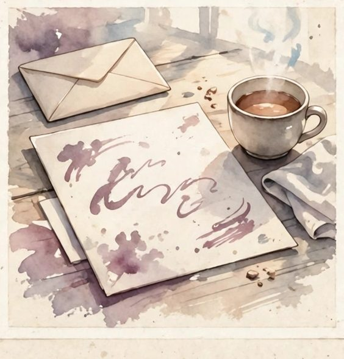
An open letter on a breakfast table beside a cup, morning light across the page.
The dreamed house has a door, and at that door there is no rush. The Keeper returns to this image often, because the threshold is where so many real mornings are lost. Coats are seized, words are half said, the day begins with an apology to the doorway itself. In the dream, leaving takes the time leaving takes. A hand rests on the latch a moment. The person going out looks once at the room behind them, not in sorrow, but in simple acknowledgement that this is the place they will return to.
The register is careful here to distinguish slowness from lateness. The house does not praise drifting, and it does not imagine a life without appointments. What it imagines is a margin, a small built width of time around every departure, the way a well made door has clearance so it does not scrape the frame. The margin is planned the night before, in the laying out of shoes and keys, in the refusal to fill the first hour to its brim. What looks like calm at the door is usually preparation, quietly done.
Those who stay behind in the dreamed house also keep the unhurried threshold. A parting is spoken fully. A returning is greeted without a list of grievances waiting in the hall. The Window Desk records many small dreams, and a surprising number of them are only this, a door that opens and closes without haste, several times a day, for years. The Keeper understands. A life is crossed at its thresholds far more often than at its summits, and peace at the door is peace carried everywhere.
44Morning in the Dreamed Life
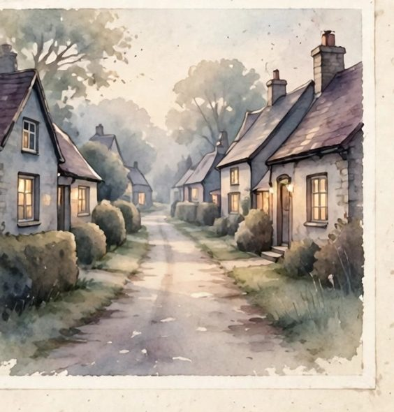
A lane at first light with cottage windows waking one by one along its length.
If the house had to choose one hour to represent the whole dreamed life, the Keeper would choose the first hour of the morning, and this block is its portrait. The lane outside is still blue with early light. Windows wake one by one, not all at once, because in this life even light arrives by turns. There is no single moment when the day is declared begun. It gathers, kettle by kettle, curtain by curtain, until the ordinary world is standing quietly in its place and ready to be lived in.
Inside the house, the first hour is protected by a simple rule, that it belongs to pace and not to production. The dreamed morning is about an unhurried first hour, about moving through washing and breakfast and the feeding of any creature that depends on the house, at the speed those things naturally take. Nothing is measured. Nothing is improved. The porridge is not optimised and the walk to fetch the post is not combined with three other errands. Each small act is allowed to be the only act while it lasts.
The register notes that visitors often expect the dreamed morning to be beautiful, and are almost disappointed to find it ordinary. The Keeper considers this the surest sign the dream is honest. A morning that must be beautiful is another task. A morning that may be ordinary, grey, even slightly dull, so long as it is unhurried, is a morning a person can actually live inside for decades. The lane lights its windows one by one. The house asks for nothing more than this, repeated, kindly, for a lifetime.
45The Pace of Bread Rising
The Keeper keeps a bowl in the dreamed kitchen, and in the bowl, under a cloth, bread is rising at the only pace bread has ever known. This block belongs to that pace. Yeast does not respond to encouragement or alarm. It works in its own time, in warmth, in the dark under the cloth, and the whole art of the baker is the art of waiting without filling the wait with fretting. The dreamed life, the house suggests, is leavened in much the same way, quietly and from within.
Many of the dreams brought to The Window Desk are, at bottom, dreams about time. The sleeper wants more of it, or slower passage of it, or forgiveness for the years it carried away so quickly. The register does not grant any of these. Instead it points to the bowl. Rise happens alongside other things. While the bread lifts, hands can mend, letters can be written, a garden round can be made. The waiting is not empty because the life around it is full, and the bread, left alone, does exactly what it was given to do.
When the cloth is lifted, the house does not call the result a triumph. It is bread. It will be baked, cooled, sliced, and eaten, probably with soup, probably at the long table described later in this wing. But the Keeper asks that the moment be noticed, the soft dome of it, the faint sour smell, the evidence that patience has a texture. A person who has watched bread rise understands something about their own slow changes that no lecture could teach. They are rising too, under a cloth, in the warm dark, on time.
The Window Desk
One desk receives all correspondence for this house — questions, corrections, and word of any dream a visitor has been carrying quietly for a long while: the house never built, the work never taken up, the morning never once lived at the pace it deserved. It is read in the order it arrives, entered in the register of windows, and kept close.
46What the Morning Protects
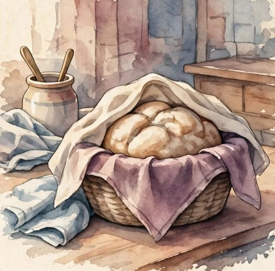
A loaf of bread rising under a cloth on a warm counter, the kitchen quiet around it.
Every protection in the dreamed house is small, and the morning protects three things above the rest. It protects the first thought of the day from being a borrowed one. It protects the body from being treated as a machine that starts at full speed. And it protects the people under the roof from meeting each other first in irritation, that thin, tired sharpness that can colour hours out of all proportion to its cause. The Keeper lists these plainly in the register, without ornament, because they are the load bearing walls of the whole dream.
The house is realistic about how protection works. It is not a wall built once. It is a set of small arrangements renewed daily, the phone left in another room until breakfast is done, the difficult conversation postponed by agreement to a stronger hour, the first cup taken in silence if silence is what is needed. None of these arrangements would impress a visitor. Together they form a kind of weather inside the house, a climate in which people soften instead of hardening as the day goes on.
What the morning cannot protect is also written down, in fairness. It cannot stop sorrow arriving, or work pressing, or the world being the world beyond the garden gate. The dream was never a hiding place. What the unhurried first hour gives is a beginning made in good order, a person who has eaten, breathed, and thought one thought of their own before the demands assemble. From such a beginning, the Keeper notes, even a hard day is met by someone who has already been, for one hour, fully and quietly themselves.
47The Same Morning, Imagined Kindly
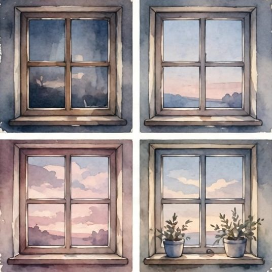
The same small kitchen window at dawn on four mornings, the light changing gently in each.
The Keeper holds a set of four mornings in this room, all of them the same morning, the same kitchen window, the same hour, imagined four ways. In the first, the light is gold and easy. In the second, rain stands on the glass and the garden is a grey green blur. In the third, frost has written on the pane and the kettle takes its time. In the fourth, the morning is unremarkable in every way, and the dreamer, telling it at The Window Desk, seemed almost apologetic for its plainness.
The house receives all four mornings with the same welcome, and this is the kindness the title speaks of. To imagine kindly is not to imagine falsely, gilding every dawn. It is to extend to each version of the day the courtesy of being enough. The rainy morning makes soup weather and a slower lane. The frosty one makes the fire worth lighting early. The plain one, the register notes, may be the most loved of all, because a life is mostly plain mornings, and a dream that only honours the golden ones abandons most of a life unpraised.
Visitors sometimes ask why the dream returns to the same window at all, when imagination could go anywhere. The Keeper answers that kindness needs a fixed place to practise on. Loving one window in four lights is training for loving one life in all its weathers, the bright seasons and the flat ones, the years of plenty and the years of making do. The window does not change. The attention does. And attention, practised kindly on the same small scene, becomes the steadiest furniture the dreamed house owns.
48What the Morning Is Really About
After eight rooms of mornings, the house pauses to say plainly what the morning is really about. It is about pace. It is about an unhurried first hour in which a person becomes present to their own life before that life begins to make its claims. The dreams collected here rarely ask for riches in the morning, or admiration, or news. They ask for time that moves at walking speed, for light that arrives gradually, for the right to begin without being startled into beginning.
The Keeper writes this without embarrassment, because the smallness of the wish is its dignity. A person who dreams of a slower morning is not avoiding the day. They are asking to meet it whole. The register has heard from those whose mornings are sieges, alarms and traffic and demands stacked before dawn, and their dreams are never of escape to a distant shore. They dream of the same kitchen, the same lane, the same work, held inside a gentler first hour. The place stays. The pace changes. That is the entire miracle requested.
So this block stands in the wing as a kind of summary stone. The morning protects because it is unhurried. The bread rises because it is left alone. The door is calm because a margin was built around it. All of it is one lesson in different clothing, that a life is shaped less by its great events than by the speed at which its ordinary hours are lived. The dreamed mornings will be returned to, later, by other rooms. For now the house lets the lane brighten, and turns, at last, to the people.
49The People of the Dream
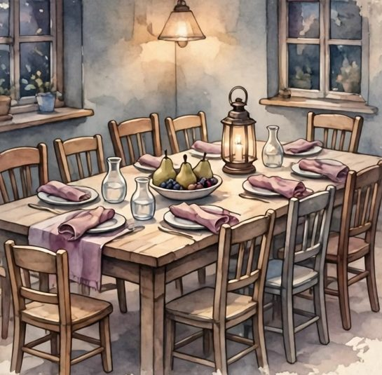
A long table set for friends in a lamplit room, chairs of many sizes drawn up to it.
Here the wing turns from hours to faces. The people of the dream, the Keeper insists at the outset, are real people imagined nearer, not figures invented for comfort. They have names the dreamer knows. They have their own work, their own sorrows, their own kitchens elsewhere, and the dream does not erase any of that. It simply closes a distance. The friend who lives far away lives, in the dream, down the lane. The brother seldom written to writes often here, and is answered. Nearness is the whole alteration, and it is enough.
The house is firm on this point because a lesser kind of dreaming exists, in which people are arranged like furniture around the dreamer, admiring, agreeing, always available. The register does not record such dreams, not from judgement, but because they fade so quickly and leave so little behind. A real person, imagined nearer, brings their difference with them. They argue at the table. They tell the long story again. They are loved in the dream the way they are loved in life, with the texture intact, and that is why the dream nourishes instead of merely pleasing.
The long table in the lamplit room is therefore set with chairs of many sizes, because the people are of many kinds. There are elders who take the seats with backs. There are children who will not sit long at all. There are friends whose chairs have been empty in life for reasons of road and year and circumstance, and who in the dream simply have their places again. The Keeper sets the table without ranking the chairs. In the dreamed life, everyone who is loved is, in the plainest sense, expected, and the setting of their places is a daily act of faith.
50Faces at the Dreamed Table
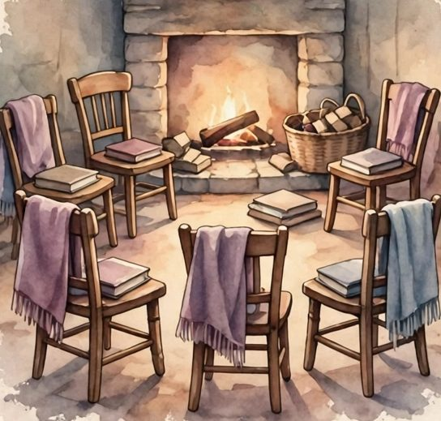
Many chairs around a hearth in warm light, each with a folded shawl or a book left on it.
The Keeper can describe the faces at the dreamed table only the way the dreamers describe them, incompletely, with love doing much of the work. There is the face that has aged in life and is younger here, not from vanity, but because the dreamer last saw it daily in younger years. There is the face gone from the world entirely, seated by the hearth as naturally as it ever was, a shawl folded on the chair, a book left open. The house does not explain these presences. It makes room for them, which is a different and older kind of sense.
What strikes the register, reading many such dreams together, is how little the seated company says. The dreamed table is not a scene of speeches. People are remembered shelling peas, mending a strap, listening with their whole attention to a story about nothing. The dream preserves not the great occasions but the company itself, the being in the room together, the fire doing its work, faces lit and at rest. To be with them, without agenda and without the clock of parting already audible, is apparently one of the deepest wishes a sleeping heart can form.
The Window Desk does not ask dreamers to justify who sits at their table. The dead sit beside the distant, the estranged beside the everyday, and no seating plan survives scrutiny, nor needs to. The Keeper notes only that every dreamer, without exception, sets more chairs than the house in life could hold. Love, given a room of its own to arrange, always overestimates the seating and underestimates nothing else. The hearth is lit. The chairs wait in the warm light. In the dream, for one unmeasured evening, everyone is in from the cold.
51Old Friends, Nearer
Of all the distances the dream corrects, the distance between old friends may be the one it corrects most tenderly. These are the people who knew the dreamer before the present shape of life had set, who remember the earlier versions and hold them without mockery. In waking years they are scattered by work and marriage and the slow drift of addresses. Letters thin out. Calls become annual. Nothing is wrong, exactly, except that a friendship built for daily bread is being asked to live on feast days alone.
In the dreamed life, the old friends are simply nearer. One keeps the cottage beyond the garden. Another comes up the lane on Thursdays without being invited, because invitation was settled years ago and no longer needs renewing. They fall back into the old shorthand, the sentences finished for each other, the disagreements that have been had so often they are now a form of music. The Keeper notes that dreamers wake from such dreams steadied, as if a load bearing friendship had been inspected in the night and found, underneath all the distance, entirely sound.
The house offers one caution in this room, written kindly. The dream of nearer friends is not an accusation against the real and scattered ones, nor against the dreamer for letting the years arrange things as they did. Roads diverge for honest reasons. What the dream gives is not a plan but a reminder of value, the knowledge of which faces the heart sets chairs for when no practicality is consulted. Some dreamers, after visiting this room, write a letter. The register records the fact without claiming credit. Nearness in the dream sometimes tutors nearness in life, one envelope at a time.
52A Love Lived Plainly
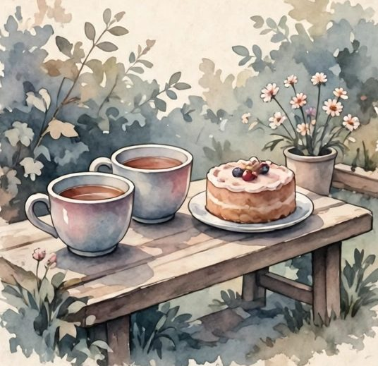
Two cups and a small cake on a garden bench, an afternoon kept simple between friends.
The dreamed life contains love, but the Keeper observes that it is almost never the love of grand scenes. It is a love lived plainly, in the grammar of small repeated things. Two cups carried out to the garden bench without ceremony. A coat held while arms find sleeves. The last slice given away without the gift being announced. Dreamers describing this love often sound surprised at its ordinariness, as if they expected their deepest wish to be more splendid. The house is not surprised. Splendour is for occasions. Plainness is for always, and the dream is homesick for always.
This plainness has a particular texture that the register tries to preserve in words. It is love without performance, conducted away from any gaze, where kindnesses are done at the speed of noticing rather than the speed of display. The dreamed partner, friend, companion of the heart, is not continually declaring. They are continually attending. They remember how the tea is taken. They leave the porch light on. They ask the second question, the one that shows they were listening to the answer to the first. In the dream, being attended to in these small ways feels, the dreamers say, like being known to the bone.
The house sells nothing and promises nothing, and it makes no promise here either, that such a love waits around any particular corner. What this room holds is the shape of the wish, recorded respectfully. To love and be loved without theatre, to share a bench and a small cake and an afternoon that asks for nothing more than itself, is a complete vision of happiness by the standards of this wing. The cups are washed afterwards and put away side by side. The Keeper finds the whole philosophy of the place in that simple act of putting away.
53Neighbours Who Know Your Name
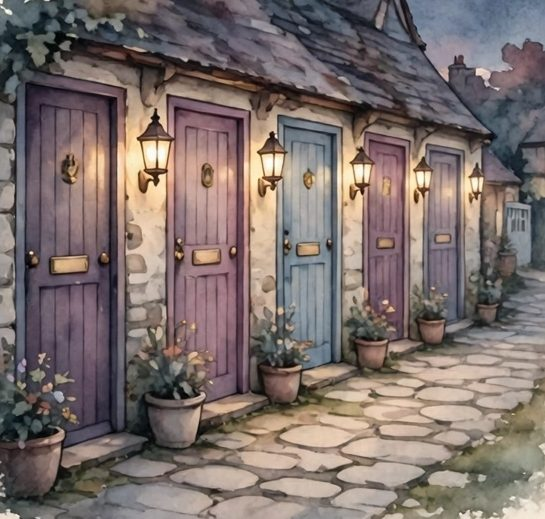
A lane of cottage doors at evening, each with a lamp lit and a name plate left blank.
Beyond the table and the garden, the dreamed life has a lane, and along the lane are neighbours who know your name. The Keeper considers this one of the most modest and most radical wishes in the entire register. A name known by the people nearby means a person is placed, counted, expected to be somewhere about. It means the absence at the window would be noticed by evening. In the dream, this web of small recognition is not surveillance and it is not intrusion. It is the old, warm knowledge that a life is being witnessed by those who share its weather.
The dreamed neighbours are drawn with pleasing precision by their dreamers. There is the one who takes in parcels and leaves them inside the gate without a note, the act itself being the note. There is the one whose ladder is every ladder on the lane, borrowed with a knock that is more announcement than request. There is the elder whose evening lamp is the lane's informal clock. None of them are intimate friends. The dream distinguishes, wisely, between the many kinds of closeness, and gives the neighbours their own kind, durable, bounded, and kind.
The name plates on the doors in the caption are left blank, and the house likes the honesty of that. The dreamer knows the names even if the plates are never engraved. What matters is the saying of them, over fences, across the lane, in the small currency of greeting that compounds daily into belonging. A person greeted by name at their own gate, morning and evening, for years, is a person rooted in a place by the lightest and strongest of ties. The Keeper records the wish without embroidery. It asks for a lane, some lamps, and to be known.
54The Table with Room
The Keeper states the doctrine of this room in one sentence, and then spends the room unfolding it. Being expected gladly and having room at the table are the dream's true furniture. Couches and curtains, in the register's accounting, are decoration. The real furnishings of the dreamed life are places laid for people, chairs that exist because someone specific might sit in them, a table built longer than the household strictly needs. When dreamers describe their houses, it is striking how the measurements that matter are always of welcome, how many the table seats, how many the guest room sleeps.
Room at the table is a physical thing before it is anything else. It is the leaf kept in the table all year, not stored away. It is the extra loaf, the soup made in the pot that is slightly too big, the household habit of abundance in small things so that one more is never a strain. The dreamed house is not rich. Its plenty is a practice, renewed at the market and the stove, and anyone who has been the unexpected one at such a table remembers the ease of it for the rest of their life, how the chair appeared as if it had always been there.
The register also records the shadow side honestly. Many dreamers first imagine the table with room because they have known the table without it, the gathering where their place was doubtful, the household where a guest was a problem to be solved. The dream answers those memories not with grandeur but with carpentry. Build the table longer. Keep the leaf in. Set the extra place before it is needed, as a standing statement of intent. The Keeper closes the room with that image, a place laid at an ordinary supper for nobody in particular, which is to say, for whoever life sends up the path.
55Being Expected, Gladly
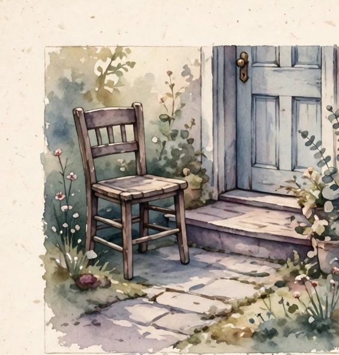
A doorstep with a chair set out beside it, room made for whoever comes up the path.
To be expected is one thing. To be expected gladly is another, and the distance between the two is the territory of this room. Every dreamer who comes to The Window Desk knows the first kind, the arrival tolerated, the visit fitted in, the welcome with a clock audible inside it. The dream, with its usual quiet radicalism, imagines the second kind. The chair is set out on the doorstep before the guest is even in sight. The household has organised itself around the pleasure of the coming, not around its inconvenience.
The Keeper has noticed that glad expectation changes the one who waits as much as the one who arrives. A house that expects gladly keeps itself ready in spirit. The good biscuits are not saved past their purpose. The spare bed is aired as a matter of rhythm rather than emergency. Even the waiting itself is pleasant, an hour with a particular savour, the lane watched from the window without impatience. In the dreamed life, anticipation is counted among the joys themselves, not taxed as a cost against the event it precedes.
For the arriving one, the dreamers say, glad expectation is felt before a word is spoken. It is in the speed of the door opening, the light left on, the absence of surprise performed as grievance. A person who has been expected gladly walks into a room already shaped to receive them, and something in them, often something long braced, sets itself down. The house believes this may be the single kindest experience one life can offer another. It costs a chair, a lamp, and forethought. The register recommends it without qualification.
56The People Are Not Props
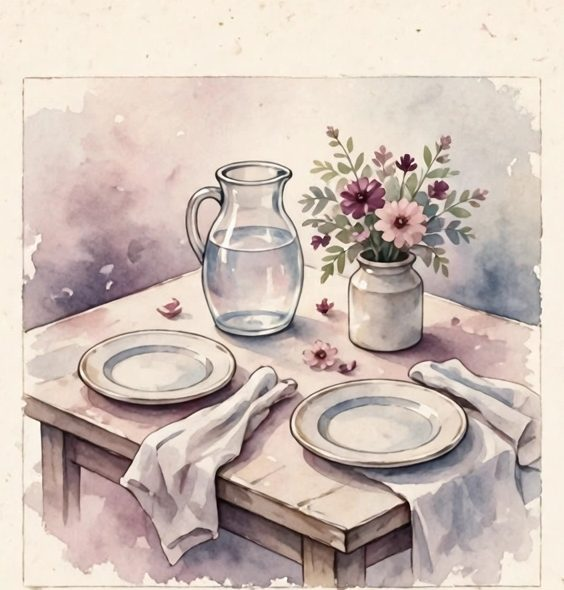
A table laid for a quiet supper, two plates, a jug of water, flowers in a plain jar.
The Keeper asks that this room be read slowly, because it guards the whole wing against a misunderstanding. The people of the dream are not props. They are not placed in the lamplit room to admire the dreamer, nor summoned to the table to complete a picture of happiness that is really about one person at its centre. They arrive in the dream with their own centres intact. They have opinions the dreamer must reckon with, fatigue the dreamer must respect, news of their own that rearranges the evening. The dream is richer for every one of these resistances.
This is why the dreamed suppers in the register so rarely resemble a portrait. Someone is late. Someone is quiet for reasons of their own and is allowed their quiet. The conversation goes where it goes, down lanes of memory and nonsense that no host would have planned. The dreamer, telling it afterwards, often laughs at how little control they had over their own dream's company. The house regards this laughter as a sign of health in the wishing. A dream in which everyone behaves is a theatre. A dream in which everyone is real is a household.
There is a discipline here for waking life too, though the house states it gently and only once. To love people as themselves, rather than as furnishings of one's own story, is work that begins in imagination. The dream rehearses it nightly. It lets the friend be tired, the elder be stubborn, the beloved be absorbed in a trouble that is not about the dreamer at all, and it finds the company good anyway, good precisely in its independence. Two plates, a jug of water, flowers in a plain jar, and across the table, a person entire. Nothing in the wing is more important than this.
57Fewer, Closer
As the dreams deepen across the years of the register, the Keeper notices a pattern so regular it might be a law of the house. The company gets smaller and the chairs get closer to the fire. The young dreamer imagines a crowd, a table groaning, a house ringing with many voices. The older dreamer, telling a similar dream at The Window Desk, sets four chairs, sometimes three, sometimes two, and speaks of the people in them with a fullness that fills the room anyway. Fewer, closer, is the direction the heart seems to travel when it is honest.
The house is careful not to read this as loss, though loss is often braided through it. Some chairs empty because the world took their people far away, and some because life, in its ordinary sorting, revealed which few were the load bearing ones. The dream does not rage against the sorting. It honours what remains by drawing it close. The conversations in the small circle are longer. The silences are easier. Nobody performs, because with the few who come often there is nothing left to prove and, blessedly, nothing left to hide.
A smaller circle also makes a promise the crowd cannot, the promise of continuity. The few will be there next week and next winter. Their chairs wear into familiar shapes. The register ends this room with an image several dreamers offered independently, which the Keeper takes as confirmation. In the dreamed life, the best evenings are not the fullest ones. They are the ones where the fire is low, the hour is late, the company is two or three souls known to the roots, and nobody, looking around the little circle, would trade it for a hall of strangers.
58The Guest Who Stays Late
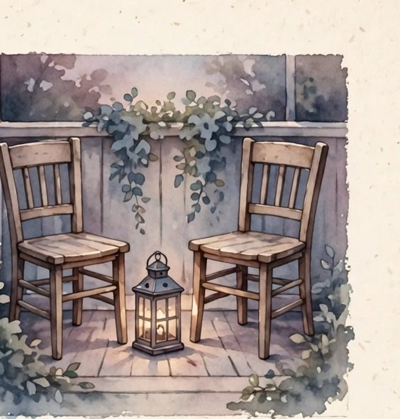
Two chairs on a porch long after supper, a lantern between them burning low.
Every household in the register seems to have one, the guest who stays late, and the dreamed life honours this figure with a room of its own. The supper is cleared. The household has gone, in ones and twos, to bed or to home. But two chairs remain occupied on the porch, the lantern burns low between them, and the conversation, released from the table's mild formality, goes down at last to the deep water. The Keeper notes that dreamers protect this scene fiercely. It is among the least splendid and most treasured in the whole collection.
What is said in the late chairs is seldom recorded, and the house does not pry. The register knows the subjects only by their silhouettes, the old grief carried out and examined gently in the dark, the plan confessed before it is ready for daylight, the story told for the first time to anyone. The lateness itself is the condition. Some truths require the household asleep and the stars out and the knowledge that nobody is waiting for the porch to empty. The guest who stays late provides the hour in which a life can be spoken plainly.
There is also, the dreamers admit, simple pleasure in it, the refusal of the evening to end while it is still good. The lantern is refilled once, against all economy. The cold comes down and is answered with the folded shawls from the hearth chairs. In the morning the two will be tired and will say so, and neither will regret it. The house closes the room by observing that a life in which someone regularly stays late, talking into the small hours on your porch, is a life that has kept its depth. Such guests are not found. They are grown, over years of evenings, and the dream knows their worth.
59What the People Ask of Us
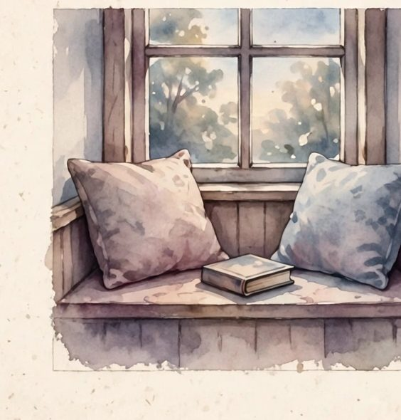
A window seat with two cushions and a book left face-down, company expected and easy.
It would be a false dream if the people in it asked for nothing, and this room restores the balance. The people of the dreamed life ask things of the dreamer, as real people do. They ask for time that is actually given, not promised in passing. They ask to be listened to at the length their trouble requires. They ask for forgiveness in the small currencies, the forgotten call, the sharp word sent in a tired hour, and they ask, sometimes, to be allowed to help, which the proud dreamer finds the hardest request of all to grant.
The Keeper records these askings without flinching, because they are the proof that the company is real. Props ask for nothing. Audiences ask only for a performance. People ask for bread and patience and the loan of the ladder and the truth told kindly and early. In the dreamed life, remarkably, the dreamer is glad to be asked. Being needed by the few who are loved appears in the register as a form of wealth, the evidence that one's days are woven into other days at points that bear weight. The window seat has two cushions because conversation, in this house, is expected to be mutual.
The house adds one refinement before the room closes. The people ask, and the dreamer may also answer honestly, with a no that is spoken warmly when the well is low, with a later that names its day. The dreamed relationships are sturdy enough for refusal, which is how the register knows they are relationships at all. Nothing in this wing is more quietly hopeful than that. To be among people where asking is safe and refusal is survivable, where the book can be left face down and the talk resumed tomorrow, is to be, in the fullest sense the dream can manage, at home.
60What the People Are Really About
The wing of mornings ended with a summary stone, and the wing of people ends with one too. What the people are really about, the Keeper writes, is nearness that is glad, repeated, and real. The dreams do not ask, in the end, for admiration or rescue or a life rearranged around the dreamer like a stage. They ask for the friend down the lane, the chair set out on the doorstep, the old voice on the porch after the lantern is lit. They ask for a place in other lives and for other lives to have their place, securely, at the long table of one's own.
Being expected gladly and having room at the table are the dream's true furniture, and this closing room simply sets those two pieces in the centre where they belong. Everything else in the collection, the gardens and letters and rising bread, was preparation for this, a pace of life slow enough that people can actually be met inside it. A hurried life may contain hundreds of faces and no company. The dreamed life, moving at walking speed through its unhurried first hour and its long evenings, contains a few faces, and is full.
The register closes this section without ceremony, as the house prefers. The lane settles into evening. Voices linger at the gate because parting from good company is done slowly here, the last few sentences spoken with hands already on the latch. The Keeper makes the final entry in a plain hand and turns the page toward whatever wing comes next. DREAMED SOFTLY, KEPT CLOSE, the footer reads, and under that modest line the whole matter rests, the mornings, the table, the people, kept the way the dreamed life itself is kept, quietly, and near the heart.
The Window Desk
One desk receives all correspondence for this house — questions, corrections, and word of any dream a visitor has been carrying quietly for a long while: the house never built, the work never taken up, the morning never once lived at the pace it deserved. It is read in the order it arrives, entered in the register of windows, and kept close.
61What the Secret Protects
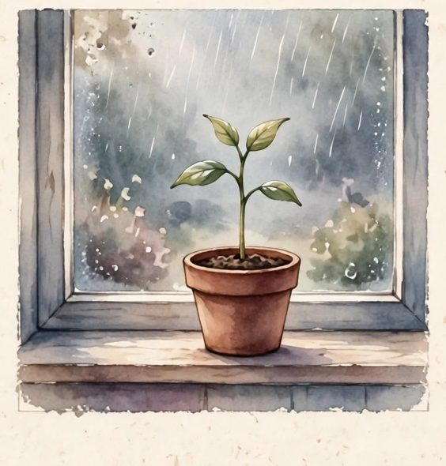
A young green seedling in a pot on a windowsill, sheltered from the weather outside.
The Keeper of the Quiet Windows keeps a small pot on the sill in this room, and the register notes it without fuss, as it notes the chairs and the lamp. What the secret protects, in the house account, is something at that scale. It is not a fortune and it is not a finished plan. It is a young green beginning that has only recently learned how to stand upright, and whose roots are still shallow in the soil. The house does not ask it to prove itself. The house gives it light, a little water, and time that is not measured by anyone watching from the road outside.
The protection is practical before it is anything else. A seedling left in hard weather too early does not become stronger for the exposure. Its stem bends, its leaves tear, and the small store of strength it had goes into surviving the day rather than growing through it. The dreamed life, while it is still young, asks for much the same practical mercy. It needs a season in which it can be clumsy and unfinished without being judged as a final shape. Behind the quiet window it can change its mind, grow crooked for a while, and correct itself in private, unwatched.
So the house is plain about what is being guarded here. The secret guards tenderness, and it guards beginnings, and it guards the right of a hope to be small for as long as smallness is its true size. Nothing in the room apologises for that. The Keeper draws the curtain only against the weather, not against the world in general, and the distinction matters to everyone who works in this house. Shelter is a temporary kindness with a purpose. The purpose is growth, quietly carried on until the young thing has roots enough to hold its own ground.
62A Dream Can Be Bruised by Telling
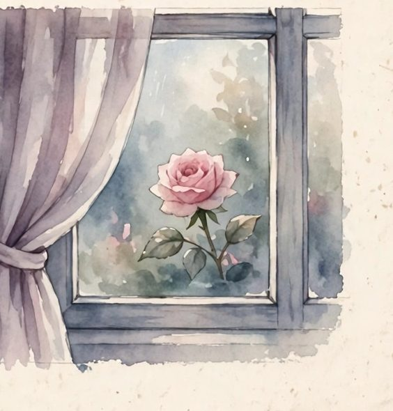
A rose seen through a window with the curtain half drawn, its colour softened by the glass.
In this room the house considers a simple observation, recorded at the Window Desk in a steady hand. A dream can be bruised by telling, much as a flower can be marked by careless handling, and the bruise is rarely visible at once. Words spoken aloud in the wrong hour invite answers, and answers arrive with their own weight. A young hope hears itself described back in another voice, slightly altered, and begins to doubt the shape it had when it was still quiet and entirely its own and still becoming.
The bruising seldom comes from unkindness, and the house is careful to say so. More often it comes from ordinary haste. A listener asks what it costs, or when it starts, or how it compares with a neighbour choice, and each fair question presses a thumb against something still soft. The dream does not break. It withdraws a little. It speaks less freely the next time it is mentioned, and the person carrying it learns to offer a shorter and safer version, polished for company and poorer for the polishing, while the true version waits somewhere behind it.
The Keeper therefore treats timing as part of care. A thing may be told later, to fuller effect and at far less cost, once it has thickened and settled and knows its own name. Until then the curtain stays half drawn, not in fear but in good husbandry. The rose behind the glass keeps its colour because the glass takes some of the glare. In the same way, the register suggests, a dreamed life keeps its colour when telling is paced to its strength, and when silence early on is understood as tending rather than hiding.
63Kept from the Market
Some rooms in the house are for receiving visitors, and some are for work, but this room is set apart for a plainer refusal. The dreamed life kept here is kept from the market. It is not priced, it is not pitched, and it is not improved according to what strangers might pay for it. The Window Desk keeps no ledger of its worth in coin. To price a young dream too early is to let the price begin making its decisions, and the house has seen where that road quietly leads a person.
Markets are not wicked, in the house view, and the register does not pretend otherwise. They are simply fluent in one language, the language of exchange, and a tender hope speaks another language altogether at first. Put the two together too soon and the hope starts translating itself, badly, leaving out whatever cannot be sold and exaggerating whatever can. It becomes louder where it should be patient and simpler where it should be subtle. What remains may trade well enough in the world, but it is no longer quite the life that was dreamed in the quiet of the early mornings.
So the basket stays covered and the door of this room stays off the trading route. The house sells nothing here and promises nothing here, and that plain fact is written where a visitor can read it. What is kept from the market is not wasted by the keeping. It is allowed to ripen at its own pace, for its own sake, judged by whether it is true rather than whether it is wanted. If a later season brings it outward, it will go outward whole, carrying its own reasons, rather than reasons fitted to it by a crowd passing the window.
64Kept from Helpful People
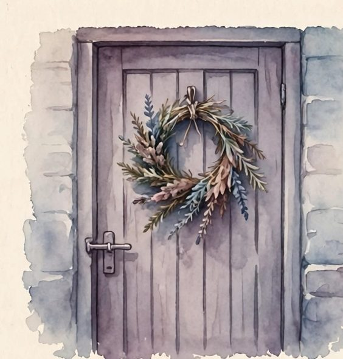
A closed door with a wreath of dried herbs hung on it, the house quiet behind it.
The door in this room carries a wreath of dried herbs, and the house hangs it there for a reason the register explains without rudeness. A young dream must sometimes be kept even from helpful people. Helpful people arrive with energy and goodwill, and with plans already half formed in their hands. They mean to lift the thing forward. Yet their help tends to pull a tender hope toward their own idea of its shape, and a dream can be loved, quite sincerely, into a form its owner no longer recognises as home.
Their questions are generous and still they press. They suggest a faster road, a safer version, a friend who should be consulted by Friday. Each suggestion is reasonable on its own, and together they crowd the small room where the dream was quietly learning to breathe. The person who carries it begins answering letters instead of listening inward. Weeks pass in courteous explanation. The house notes this pattern often enough to have a rule for it, written at the desk in plain ink. Goodwill is not the same as room, and help offered early can take room away.
The Keeper therefore keeps this door closed for a season, and closed kindly. Nothing in the wreath is a rebuke, and nothing in the closed door is a judgement on the people standing outside it. When the dream is older and firmer, some of those same people may be welcomed in, and their strength may then be a true gift to it. Timing decides whether help helps. The house would rather be thought slow for a while than hand a young and tender thing over to many willing hands before it can bear their handling.
65The Seed Does Not Need Witnesses
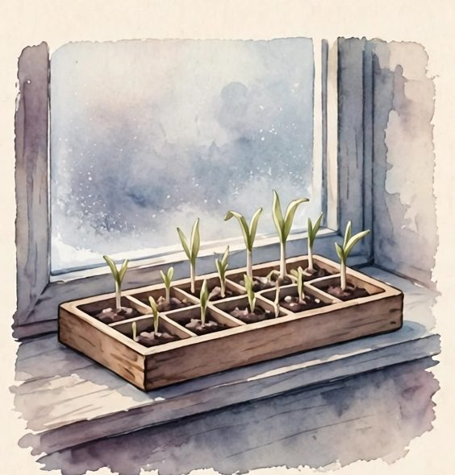
A seed tray on a sill in weak winter light, small green shoots just showing.
On the sill in this room stands a seed tray, and the Keeper waters it in weak winter light without ceremony and without an audience. The register makes a short entry and moves on. The seed does not need witnesses. Germination is not a performance, and the first green shoots do not grow taller for being admired or steadier for being counted each morning by hopeful eyes. They grow because the soil is right and the cold is kept off and the small work underground is left alone to do itself in darkness and in quiet.
This matters for the dreamed life because people often feel that an unwitnessed hope is somehow less real. They want a witness the way a contract wants a signature, as proof that the thing exists and binds. The house takes a gentler and firmer view. What is growing is real before anyone attests to it. A person may carry a dreamed life for years, telling no one, and the carrying is not a rehearsal for the life. It is part of the life itself, the long underground part, without which nothing above the soil would have anything honest to stand on.
So the tray stays on the sill and the room stays unhurried. The Keeper does not lift the seeds to check them, knowing that inspection is its own kind of disturbance. Faithfulness here looks like restraint. A little water, a steady place, a window kept clean for the light there is. In time the shoots will be plain to anyone who enters, and witnesses will have something true to witness. Until that time, the house guards the quiet dignity of beginnings that owe nobody a demonstration, and it records their progress in pencil, lightly, as befits things still deciding what they will become.
66Privacy Is Not Shame
The house states this room plainly, because confusion on the point does quiet harm. Privacy is not shame. A curtain drawn in the evening is not a confession, and a door kept shut is not an admission that something wrong is happening behind it. Shame hides because it fears discovery of a fault. Privacy keeps because it values what it keeps. The two may look alike from the road, where only the curtain is visible, but inside the room they are as different as a locked cupboard of poisons and a covered bowl of rising dough.
The register at the Window Desk returns to this distinction whenever a visitor lowers a voice to ask about it. A person may keep a dreamed life private because the dream is tender, because the time is early, because the words for it are not ready, or simply because it is theirs. None of these reasons needs defending. The house does not ask its residents to publish a justification alongside their quiet. It asks only that the quiet be honest, chosen rather than frightened, a shelter picked in clear weather of the mind and not a corner fled to in the dark.
Understood this way, privacy becomes a clean and ordinary strength. It lets a hope belong wholly to the one who carries it, undivided by commentary and unshaped by expectation. The person walks through the day with something intact inside the ordinary hours, and no one is wronged by its being intact and unannounced. The Keeper keeps the curtain plain and the room behind it ordinary and well aired. Nothing festers in a room that is opened to the morning sun. The quiet here is not a hiding place. It is a keeping place, and the difference is the whole teaching of the room.
67A Dream Too Young for Weather
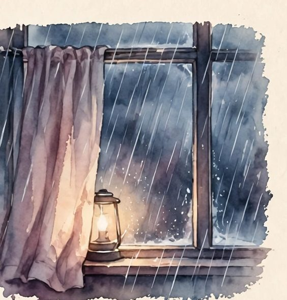
A window in a storm, curtain drawn, lamplight steady inside against the rain.
There are nights in this room when the rain comes hard against the glass and the Keeper lights the lamp early and draws the curtain without debate. Some dreams are simply too young for weather. Weather, in the house sense, means the general climate of opinion, the passing storms of fashion, the cold snaps of ridicule and the long wet seasons of discouragement that settle over whole streets at once. An older hope can stand in such weather and even be cleaned by it. A young one is flattened by the first serious gust.
The house does not call this weakness. A sapling that bends in a gale is not failing at being a tree, and a dreamed life that falters under public squalls is not failing at being true. Youth has its own honest limits, and the register records them without disappointment. What the young dream lacks is not worth but thickness, the slow accumulation of seasons that turns a stem into a trunk. Thickness cannot be hurried by exposure. It can only be grown, in shelter first and in open air later, in that order, as every gardener the house has ever consulted agrees.
So on storm nights the lamp burns steady and the room does its quiet work of being an inside. The dream rests, or reads, or plans small steps in pencil, while the weather spends itself against the walls. This is not retreat from life. It is the portion of life that happens indoors, and no house apologises for having an indoors. When the morning comes clear, the curtain opens again and the young thing takes a little more air than it did the week before. Growth measured that way is slow to boast about, and it is the kind that lasts.
68Kept Close, Not Locked Away
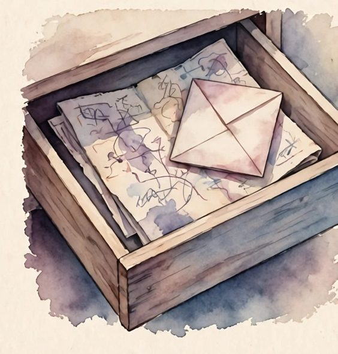
A drawer half open with a folded map and a letter resting inside, kept close, not hidden.
The drawer in this room stands half open, and the Keeper chose the position deliberately, as the register notes for anyone puzzled by it. The dreamed life here is kept close, not locked away. There is a real difference, and the house insists on it. A locked thing is defended against its owner as much as against anyone else. It is visited rarely, with a key and a certain effort, and between visits it stiffens. A thing kept close is handled often, in private, with ease. It stays supple because the hands that love it reach it daily.
Kept close means the dream sits inside the ordinary day rather than beneath it. It is the folded map in the drawer that is actually consulted, the letter that is actually reread on quiet evenings. The person knows where it is and what it says without performing any ceremony of unlocking. Privacy of this kind is warm rather than guarded. It does not flinch when the drawer is opened, because opening it is a habit, not an event. The house prefers this arrangement for long keeping, since what must be carried for years should be carried comfortably, near the hand.
There is no lock on the drawer, and the absence is the teaching. Locking suggests an enemy, and an enemy imagined long enough begins to shape the room around fear. The Keeper will have none of that here. The house is quiet, the neighbours are at their own work, and the window gives enough screening for honest purposes. What is kept close can also, when its season comes, be lifted out in one motion and carried into the light without drama. The drawer will still be there afterwards, half open, ready for whatever tender thing arrives next to be kept in the same kind way.
69Telling One Person, Slowly
When telling finally begins in this house, it begins at the smallest possible scale, and the register is firm about the arrangement. One person. Slowly. The dream is not announced, it is offered, in portions, the way a host serves a meal course by course rather than setting the whole storehouse on the table at once. A sentence on one evening. A little more a week later, if the first sentence was held well. The Keeper watches this gradual telling the way one watches ice on a pond in spring, respecting that its strength is known only by testing it a step at a time.
Slowness is not suspicion, and the house is careful to separate the two. Slowness is how the teller stays honest. Told all at once, in a rush of relief, a dream often comes out larger or smaller than it truly is, dressed for the occasion. Told slowly, it keeps its true proportions, and the teller can hear the sound of it in the open air and adjust, and even pause the telling altogether if the air proves wrong for it. Each portion given is also a portion learned. The dream frequently says something new to its own owner in the act of being spoken carefully.
If the season goes well, the one person becomes a quiet second keeper of the thing, and the house records the change in the register with something like relief. The dream does not become common property. It gains a single witness of its owner choosing, bound by the pace the owner set. And if the telling must stop after the first evening, nothing has been lost that cannot be gathered back. That is the mercy built into the method. Begin with one chair drawn nearer the window, one lamp turned a little, and let trust accumulate at the speed it honestly accumulates.
70The Right Listener for a Young Dream
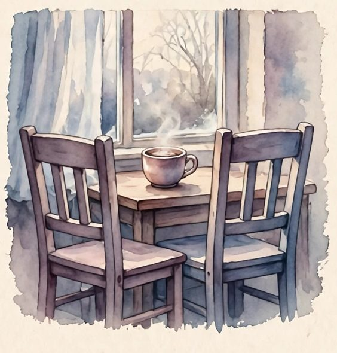
Two chairs by a window in soft light, one cup poured, a conversation begun carefully.
The room holds two chairs by the window, and the house gives thought to who is invited to sit in the second one. The right listener for a young dream is a particular kind of person, and the register describes the kind without naming names. Such a listener can hear an unfinished thing without needing to finish it aloud. They do not reach for their own story in the first minute. They do not grade the dream, or price it, or improve it before its owner has finished a first plain account of what it is and why it matters in the quiet hours.
More than anything, the right listener can hold a thing without carrying it away. Many kind people, once told, quietly adopt what they hear. They ask after it weekly, they invest their hopes in it, and soon the dreamer is reporting progress to spare a listener disappointment. The house warns against that gentle theft with real seriousness. A young dream told to the wrong keeper becomes a duty. Told to the right one, it remains a possession. The right listener returns it, at the end of every conversation, entirely to the hands it came from, and asks for no updates as rent.
The Keeper has also observed what such listeners give, since they do give something, and it is not nothing. They give the dream a first experience of air without weather. In their company the hope learns that being spoken does not have to mean being surrendered, and the teller learns the sound of the thing outside their own head. That lesson, learned early and safely, protects the dream for years. Choose slowly, the register advises, pour one cup, begin carefully, and let the quality of the listening, not the warmth of the promises, decide whether the second chair is offered again.
71Protection Has a Price
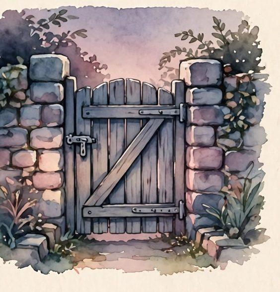
A garden wall with a gate latched but not locked, evening light on the stones.
The house is honest in this room, more honest than comfort might prefer, and the entry at the Window Desk is written in a plainer hand than usual. Protection has a price. Keeping a dreamed life behind a quiet window costs something real, and the Keeper does not hide the bill. It costs the encouragement that open telling might have brought. It costs allies who cannot rally to a cause they have not heard of, and chances that only travel along roads built by other people knowing. A protected dream walks some stretches alone that a published one would walk in company.
It costs, as well, a certain ease in ordinary society. The person carrying a quiet dream must sometimes let a misunderstanding stand at the table, must nod through descriptions of a future they privately intend to leave, must decline to explain a decision whose true reason is the dream itself. These are small payments and they are made often, in coin too minor to mention and too frequent to ignore. Over years they add up to a recognisable weight. The house names the weight rather than letting its residents discover it unnamed one tired evening and mistake it for a sign that the keeping was wrong.
Yet the wall in this room has a gate, and the gate is latched, not locked, and the light on the stones is evening light, kindly and level. The price is real and the purchase is real too. What the price buys is the dream itself, intact, growing at its own pace toward its own shape, unbargained and unbruised. The house does not argue that the bargain suits everyone. It argues only that the bargain should be made with open eyes, the cost counted in advance and paid willingly, like rent on a room one has chosen because the light in it is exactly right.
72What Protection Is Really About
Having counted the price in the room before, the house turns in this room to the purchase itself, and the register takes its time over the entry. What protection is really about is not fear of the world. It is loyalty to a beginning. The Keeper protects the dreamed life the way a shepherd protects lambs in a hard spring, not because the hills are hated but because the lambs are loved and the season is what it is. The centre of the matter is the young thing, not the weather. Attention fixed on the thing itself stays gentle. Attention fixed on the threat turns hard.
Protection is also about sequence, about letting first things happen first. A dream must become clear to its owner before it can afford to become clear to anyone else, and clarity has an order of operations that cannot be reversed without loss. Root before branch, the house says, and branch before blossom, and blossom before fruit, and no stage apologised for or skipped. What looks from outside like mere delay is usually this order being respected. The person is not stalling. The person is letting the dream have its underground season in full, so that everything later has somewhere true to grow from.
Understood so, protection stops being a hiding and becomes a form of work, as real as any work done in the open rooms of the house. It is weeding and watering. It is saying no to a hundred reasonable invitations on behalf of one unreasonable hope. The Keeper keeps the tools for it by the door, ordinary and worn. When the gate finally opens for the dream to go outward, it will not open because protection failed. It will open because protection succeeded, and succeeded completely, and the thing it guarded is at last strong enough to no longer need guarding in the same way.
73The Distance Between Two Lives
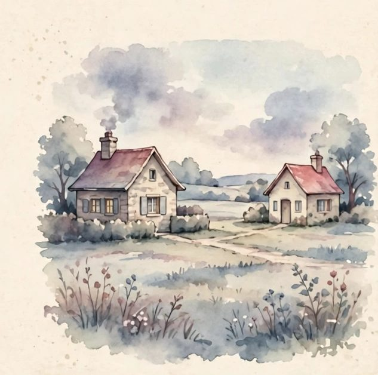
Two small houses across a field from each other, a path worn faintly between them.
From this window the house can see the subject of the room whole, and the Keeper often stands here in the early evening. Across a field stand two small houses. In one, the lived life is kept, with its work and its bills and its familiar furniture. In the other, at the field far side, stands the dreamed life, quieter, less furnished, lit in a way the evening seems to favour. Between them lies the distance, and this room exists to look at that distance steadily, without decoration and without despair, as a feature of the landscape rather than a scandal in it.
The distance is real, and the house teaches its residents to measure it honestly. For some it is a few years of saving and study. For others it is a change of country, or of trade, or of nearly everything except the people they love. Measured plainly, it can look long. But the register insists on a second measurement alongside the first. The distance is crossed daily, in one direction or another, by small traffic the field path records. A skill practised at night belongs to the far house. A kindness done well in the near one belongs to both. The field is not empty. It is commuted across, constantly, on foot.
What the room forbids is the dramatic reading of the view. The two houses are not heaven and exile, and the field between them is not a wasteland or a judgement. It is a field. People cross fields. They get muddy, they rest halfway, they carry things across a load at a time, and some years they mostly stay home and mend the near roof, and that too is part of the crossing in the house accounting. Distance, seen this way, stops being an accusation. It becomes simply the amount of ground there is, and ground, the Keeper notes, is what walking is for.
74The Road Between the Houses
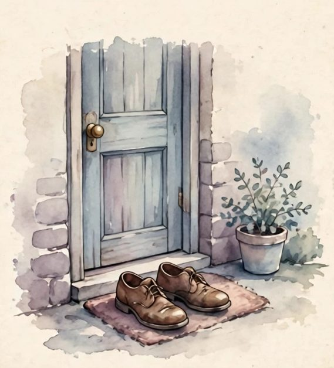
A pair of worn shoes by a door, side by side, resting after the day's walking.
The road between the houses is not, in the house telling, a grand highway with markers and milestones provided by anyone else. It is a path worn faintly by one person feet, crossing and recrossing the middle field, and the worn shoes by the door in this room are its truest portrait. The road is made by walking it. That sentence is written at the Window Desk without ornament, because the Keeper has watched residents wait, sometimes for years, for the road to be built for them by circumstance, and circumstance, the register notes dryly, is not in the road building trade.
Walking it looks undramatic from any window. It looks like an hour given in the evening when the day work is done. It looks like a library book renewed, a sum put aside so small it embarrasses, a letter drafted and not yet sent, a skill kept warm against a season that has not announced itself. The path records all of it impartially. Grass does not care whether a step was inspired. It bends for the tired step and the dutiful step exactly as it bends for the joyful one, which is why the road exists at all. It is the sum of steps taken at whatever quality the days allowed.
There are also days, whole weathers of days, when the shoes stay by the door and the road is not walked at all, and the house declines to make a tragedy of that either. Rest is part of the road discipline, and so are the seasons of the near house, whose roof and children and obligations have their own rightful claims. The path does not vanish for being unpaced for a month. It waits in the grass, faint and findable. The Walker returns, the shoes come off the step again, and the crossing resumes at whatever pace the year permits, which is the only pace it ever had.
75Looking Across Without Bitterness
It is possible to stand at this window for years, looking across the field at a life not yet lived, and the house regards the quality of that looking as a matter of real consequence. Looking across without bitterness is a practice, like any other practice kept in these rooms. Bitterness is what grows when the far house is used as evidence against the near one, when every ordinary evening is found guilty of not being the dreamed one. The register has a plain name for that habit. It calls it poisoning the well one still drinks from, daily, while saving up to move.
The practice the Keeper teaches instead begins with accuracy. The far light is real, and the distance is real, and neither fact requires the near room to be condemned in order to be left someday. A person may look across with simple longing, the clean kind, which is a form of information about where the heart intends to go. Longing points. Bitterness only burns, and burns the pointer first. Residents who keep the clean kind find, often to their surprise, that they can also enjoy a good supper in the near house without feeling they have betrayed the far one by tasting it.
There is also, the house notes, the matter of the view in the other direction, too rarely considered from this window. From the far house, when it is reached, the near one will be looked back at across the same field, and what will be wanted then is a view without bitterness either. A life that was lived decently and left honestly can be remembered kindly from the far shore. The Keeper suggests living now in a way that future looking can bless. The evening light, after all, falls on both houses at once, and seems, to the eye practised in this room, to favour neither.
The Window Desk
One desk receives all correspondence for this house — questions, corrections, and word of any dream a visitor has been carrying quietly for a long while: the house never built, the work never taken up, the morning never once lived at the pace it deserved. It is read in the order it arrives, entered in the register of windows, and kept close.
76The Lived Life Is Not the Enemy
A standing mirror in an empty room reflecting only the window and the garden beyond.
The mirror in this room stands where a visitor must meet it plainly, and the entry at the Window Desk beneath it is among the shortest and firmest in the register. The lived life is not the enemy. It is not the villain of the story the dreamed life tells, and treating it as one is the commonest error the Keeper is called to correct. The lived life is the life that has actually been happening, in real weather, with real constraints, carried by a real person doing arithmetic that the dream, in its quiet room, has never once had to do.
It has, moreover, usually been carried honourably. It has paid what was owed and shown up where it promised and kept people fed and rooms warm through winters the dream spent entirely in the future tense. To despise it now, because a farther house has come into view, is an ingratitude the house will not cosign. The dreamed life, if it is worth anything, will someday have to do all that same unglamorous work itself, in its turn, and will learn then what the lived life knew all along about the price of an ordinary kept day.
So the register instructs residents to speak of the lived life the way one speaks of an old and faithful colleague who will not be coming along on the next posting. With respect for the service. Without pretending the service was the dream. Both things are allowed to be true at once, and holding them together is most of the emotional craftsmanship this house exists to teach. The mirror reflects only the window and the garden, and the Keeper likes the arrangement. What a person sees, looking honestly at the life actually lived, is mostly light and growing things, if the looking is done in a fair hour.
77What the Lived Life Did Well
A well-kept ordinary room, everything in its place, evening light kind to it.
This room is kept ordinary on purpose, everything in its place, and the house uses it to hold a reckoning that is easy to skip. Before the dreamed life is praised any further, the register asks what the lived life did well, and asks it in detail, item by item, the way an inventory is taken when a house changes hands. It kept going, first of all, through stretches when going was not obviously rewarded. It maintained a roof and a routine. It learned the names of neighbours and the ways of a workplace and the management of a body and a budget in actual conditions.
It also, the inventory continues, gathered the very materials the dream is now built from. The taste that imagines the far house was educated in the near one. The skills are its skills, practised on its days. Even the longing itself is evidence of a kind of success, since a life that had been wholly crushed would not be producing bright alternative futures in its quiet hours. The Keeper puts this plainly to residents who arrive fluent only in complaint. The dream did not descend from nowhere onto a wasteland. It grew, like everything in this house, out of soil the lived life prepared without knowing it was preparing anything.
Writing the inventory changes the temperature of the whole project, the house has found. A person who has honestly credited the lived life stops walking the field path like a fugitive and starts walking it like an heir, carrying goods from one house to the other with permission from both. Gratitude of this unsentimental kind is not a decoration on the work. It is a structural part of it. The evening light falls kindly on the ordinary room because the room has earned kind light, and the register, in closing the inventory, records that the far house will be lucky if it is kept half as faithfully.
78The Dream Is Not a Verdict
There is a misunderstanding the Keeper meets so often that this room was furnished specifically to answer it, plainly and at length. The dream is not a verdict. Its arrival in a person quiet hours is not a court finding against the life being lived, and the dreamed life is not a judge seated above the ordinary day, delivering a sentence of failure. A dream is a direction, not a judgement. It says something about where energy wants to go. It says nothing, on its own, about the worth of where that energy has been, and confusing the two is the source of much needless sorrow in these rooms.
A verdict ends a matter, and this is precisely what a dream refuses to do. It leaves everything open. The lived life may continue for years yet, and continue honourably, while the dream ripens, and no contradiction is involved that an honest register cannot hold on facing pages. The house has also seen the dream itself change under examination, soften in one place and sharpen in another, and occasionally dissolve altogether into a truer one behind it. Verdicts do not behave that way. Living things do. The open register on the desk, its entries written lightly in pencil, is the house chosen emblem for the whole distinction.
Residents who take the point walk differently afterwards, and the Keeper can usually tell within a week. The shoulders come down. The far house stops glowing with accusation and resumes its proper brightness, which is invitation. Work in the near house gets done without the old flinch, and work toward the far one gets done without the old guilt, guilt being a poor fuel that fouls every engine it is poured into. The dream keeps its authority, which is real, but it is the authority of a compass, not a court. It points. It does not sentence. The house asks nothing more of it, and allows it nothing less.
79Standing in the Middle Field
A middle field between two houses at midday, high grass, the path crossing it clearly.
At midday the Keeper sometimes walks out and stands in the middle field, exactly between the two houses, and the house recommends the position to any resident who has begun to speak as if a choice of allegiance were required. From the middle field neither house can be caricatured. The near one shows its sound roof and its mended fence. The far one shows, just as plainly, its unfinished walls and the work still waiting in its yard. Standing between, a person remembers that both are houses, built things, kept things, and that the field belongs to the same estate as each of them.
The middle field is also, the register notes, where much of the actual life quietly happens. It is where the walking is done, and the carrying, and the resting halfway with the load set down in high grass. People who hurry across it as if it were merely an obstacle miss that it has its own seasons and its own modest harvests. Some residents, standing there long enough, discover that the field itself has become dear to them, that the crossing years were not a waiting room but a country they inhabited, with weather and neighbours and a name they will use for it ever afterwards.
No one is asked to live in the field forever, and the path crossing it is kept clear precisely so that no one has to. But the house does ask that the field be stood in, knowingly, now and then, rather than only crossed with eyes fixed on the far door. From its middle the whole arrangement makes a single picture, near house and far house and the green distance that joins them, and the person standing there is not torn between two lives. They are, for that moment, simply the owner of the whole estate, out walking it at midday, seeing what is theirs and what it still needs.
80The Distance Is Not a Failure
A compass resting on an open map on a table, its needle settled, abstract marks only.
The final room of this section holds a table, an open map, and a compass whose needle has settled, and the entry at the Window Desk is written for whoever has arrived here still quietly believing the opposite. The distance is not a failure. It is a measurement. It says how far the field runs between the house that is lived in and the house that is dreamed of, and a measurement, the Keeper insists, is information, not indictment. No one reads the miles between two towns on a map and concludes that one of the towns has failed. The map is not sorry. It is accurate, and accuracy is a kindness.
Failure would be something else entirely, and the house defines it narrowly on purpose. Failure would be refusing to look at the map at all. Failure would be burning the far house in a fit of tidiness, or burning the near one in a fit of longing, or standing at the window for a decade calling the view a wound instead of a direction. None of that has happened merely because ground remains uncrossed. Ground uncrossed is just ground, waiting its season, and the register is full of residents who crossed late and crossed well, arriving with more in their hands than the early crossers carried.
So the needle settles and the section closes in a level tone. The dreamed life remains behind its quiet window, protected at a price honestly counted, and the lived life remains standing in its field, credited for its work and absolved of a verdict no dream ever issued. Between them the path holds. The Keeper makes the last entry, closes the register, and leaves the lamp on in the window of this room, as the house does in all its rooms, not as a promise to anyone watching, and not as an advertisement, but simply because someone inside is awake, and reading, and in no hurry at all.
81Some Days the Distance Narrows
Some days, without any announcement, the distance between the lived life and the dreamed one feels smaller. Nothing large has changed. The rooms are the same rooms, the work is the same work, and the morning begins in its ordinary way. Yet the Keeper of the Quiet Windows notes in the register that the air in the house is lighter on such days, as if a window left open overnight had let a different weather in. The Keeper does not mark such days with any special sign, because a special sign would make the next ordinary day look like a loss by comparison. They are left plain in the book, dated and briefly described, so that anyone reading later can see how quietly the distance can move when it is not being forced, argued with, or measured every hour.
The house does not try to explain these days or to hold them longer than they stay. Explanation would turn a simple lessening into a puzzle, and holding would turn it into a task. Instead the Keeper lets the day be what it is. A person may notice, while making tea or walking to the gate, that the other life no longer seems to belong to another country. It seems nearer, almost within the same garden. There is also no attempt to discover what caused the narrowing, though guesses are sometimes offered at the desk. Perhaps rest did it, or a kind word, or a small finished task, or nothing that can be named at all. The house lets the cause stay unknown. A gift whose mechanism must be explained before it can be received is a gift already half refused.
By evening the distance may have widened again, and that too is recorded without disappointment. The register does not treat narrowing as a promise or widening as a failure. Both are weather. What matters to the house is that the narrowing happened at all, plainly and without force, and that it can happen again on an ordinary day when nobody was watching for it or demanding it. In the register these days sit among all the others without decoration, and that plainness is deliberate. The dreamed life is not a festival that visits rarely and leaves the house emptier. It is a neighbouring country with changing weather of its own, sometimes near in feeling, sometimes far, and the relationship between the two is measured in seasons rather than in single bright afternoons.
82The Dream Makes the Lived Life Possible
A bridge of plain planks over a narrow stream between two gardens.
It is easy to suppose that the dreamed life stands against the lived one, taking something from it merely by existing. The house holds the opposite view. For many who come to the Window Desk, the quiet dream is part of what makes the present life bearable and even good. It gives the days a second horizon, so that a hard week is not the whole of the world. This is why the house resists any account in which the dream is treated as an enemy of duty or a thief of contentment. In the accounts kept here, the dream behaves more like a reserve of meaning. The lived life draws on it in hard stretches without spending it, the way a household draws confidence from a full store room it may never need to empty.
The Keeper has seen this often enough to write it plainly in the register. A person tends a demanding household, keeps a difficult post, or cares for others through long seasons, and all the while a small dreamed life rests behind its window like a lamp in another room. The lamp does not light the present room, yet knowing it is there changes how the darkness is met. The Keeper sometimes puts it in terms of music rather than geography. A single note, however well played, is not a melody, and a life played on one note alone grows thin even when the note is honourable. The dreamed life supplies the second note. The interval between the two is not a defect in either. It is, very often, the thing that makes the sound bearable and even beautiful.
Nothing in this asks the lived life to be despised or escaped. The house honours the life that is actually being lived, with its duties and its plain pleasures, and it honours the dream for standing quietly beside it. The two gardens in the plate are separated by a narrow stream, not by a wall, and the bridge between them is made of plain planks, crossed slowly and in both directions. None of this requires the dream to be grand, and the register is full of modest ones that carried people through decades. A garden not yet planted. A language learned slowly. A coast walked once a year in the mind. Their modesty did not weaken their effect, because the effect never depended on size. It depended on presence, on the quiet fact of another garden existing across the stream.
83Grief for the Other Life, Briefly
A hill path at evening with a bench halfway up, the view opening below it.
There are evenings when looking through the quiet window brings a brief and honest sorrow. The other life is there, clear and unhurried, and it will not be lived in full. The house does not argue with that sorrow or hurry it along. The Keeper simply notes the hour in the register, leaves the bench on the hill path empty, and lets the feeling take the time it actually needs. The house keeps this sorrow in proportion by refusing two exaggerations. It will not call the grief a tragedy, because the lived life standing beside it is real and often good. And it will not call the grief foolish, because the loss it registers is also real. Between those two refusals there is a narrow, honest place to stand, and the bench in the plate is set exactly there.
Briefly is the important word in this room. The sorrow is real, but it is not the whole story of the dream, and the house will not let it pretend to be. It comes as weather comes over a hill, darkening the view for a while and then moving on. A person may sit with it on the bench halfway up, look at the view opening below, and then walk down again into the evening. People sometimes apologise for this feeling at the desk, as if sorrow for an unlived life were ingratitude toward the lived one. The Keeper does not accept the apology. Gratitude and grief are not opponents in this house, and one does not cancel the other. A person can be thankful for the actual day and still, at evening on the hill path, feel the plain ache of the other road.
When the sorrow has passed, the dream is still there behind its window, unchanged and unblaming. It did not cause the grief in order to be noticed, and it does not withdraw when grief visits. The Keeper closes the register for the night with a plain line, recording that sorrow was felt, that it ended, and that the house and the dream and the lived life all remained standing together. What the house does watch is duration rather than depth. A brief grief that is allowed its hour tends to leave the dream clearer than it found it, washed rather than damaged. It is the grief that is refused, argued with, or hidden for years that grows heavy. So the bench stays where it is, halfway up, for anyone who needs to sit down before walking on.
84The Distance, Walked
The distance between the two lives is often spoken of as if it could only be stared at, the way a person stares across a valley at a house on the far side. This room offers a plainer picture. The distance can be walked. It has a path, however rough in places, and a path is not crossed by staring. It is crossed by one ordinary step and then another, at walking pace. The Keeper keeps a pair of worn boots by the door of this room, not as a symbol but as a reminder of method. Walking is done in ordinary footwear, on ordinary ground, at a pace the legs can repeat tomorrow. Any picture of the journey that requires special equipment, special courage, or a special season is, by the standards of this house, a picture of something other than walking.
Walking changes the meaning of far. From the window, the dreamed life may look impossibly distant, all its details gathered into one bright point. On the path, that point resolves into separate things, some near and some still far, some wanted and some, on closer sight, quietly unwanted. The Keeper keeps a small map of this at the Window Desk, drawn from many accounts, and it shows no straight lines at all. Along the path, the register notes, travellers regularly discover that the distance was partly made of vagueness. The dreamed life, seen only from far away, had gathered every hope into one shining shape. Walked toward, it separates into a house, a habit, a place, a skill, a few relationships, a way of spending mornings. Some of these prove to be near. Some prove, on approach, to belong to a dream that has quietly changed.
The house is careful to add that walking the distance does not oblige anyone to arrive. A person may walk part of the path to learn its ground, and turn back with that knowledge, and the walk has still been worth the morning. The register records steps taken, not destinations reached, because the house trusts the path more than the finish and honours every honest stretch of it. For that reason the house considers even a short walk a form of knowledge rather than a failed arrival. The traveller returns with a truer map, and a truer map changes the view from the window itself. The far house no longer shines with the light of everything at once. It has windows now, and a door, and a path that the feet remember, and that remembering is its own kind of nearness.
85Small Honest Steps
A doorstep with one small potted plant set on it, a first step taken plainly.
This room holds the plain teaching of the house, if the house can be said to teach anything at all. The distance between the two lives narrows by small honest steps, not by leaps. A leap is dramatic and soon exhausted, and it often lands a person in a place they cannot keep. A step is modest, repeatable, and sized to a real day, and for that reason it lasts. The Keeper is often asked at the desk what size a first step should be, and the answer in this house is unfashionably plain. It should be smaller than pride prefers and larger than nothing at all. Pride wants a beginning that can be reported. The path wants only a beginning that can be repeated, because repetition, not reporting, is what carries a step into a life.
An honest step has a particular character that the Keeper looks for when it is described at the desk. It is small enough to be done without rearranging a whole life around it. It is truthful, meaning it truly belongs to the dream and is not a performance for anyone watching. And it can be taken today, in the weather that today actually has, rather than in some improved season that may never announce itself. There is a further test the house applies, and it is a kind one. A step is probably the right size if it can survive a bad week. Steps that require good weather, good news, and an empty afternoon all at once tend to be abandoned at the first difficulty, and their abandonment is then misread as weakness. In truth the step was simply built for a climate the year does not provide.
The potted plant on the doorstep in the plate is the house emblem for such a step. It is not a garden and does not pretend to be one. It is one living thing, placed where it will be seen each morning, asking for a little water and a little light. A year of such steps, the register shows, changes more than any single grand resolve, because each one was actually taken and quietly kept. So the plant on the doorstep is watered on busy mornings and quiet ones alike, in a minute, without ceremony. The register shows that such fidelity is rarely noticed by anyone, including, after a while, the person practising it. That is not a failure of the step. It is the sign that the step has become part of the house, which is exactly where lasting things live.
86One Drawer of the Dreamed Life
An open drawer holding a folded map, a key, and a dried flower, one dream kept in it.
The dream asks little, and this room names one of its smallest asks. One drawer. Not a room given over, not a house rebuilt, but a single drawer in an ordinary piece of furniture, cleared and kept for the dreamed life. In it may rest the few things that belong to that life: a folded map, a key whose door is not yet known, a letter never sent, a dried flower from a significant day. The drawer also settles a question that troubles many who come to the desk: where the dream is supposed to live while it is not being lived. Without a place, it drifts through every room, interrupting meals and workdays with its presence. With a place, even a small one, it can be visited deliberately and left deliberately, and both the visiting and the leaving become calmer acts.
The Keeper recommends nothing about what the drawer should hold, because its contents are not the point. The point is the boundary, plain and respected. Inside the drawer, the dream has a place that is entirely its own, however small. Outside it, the lived life goes on undisturbed and uninvaded. A whole life can be steadied by so modest an arrangement, one kept place and one closed front returned to each evening. The Keeper has one rule for the drawer, and it is housekeeping rather than mystery. It is to be kept in order. A drawer allowed to fill with unrelated clutter slowly stops being the dream's place and becomes a general hiding place, and the dream, which asked for so little, deserves its little kept well. Ten minutes of tidying, now and then, is the whole of the observance.
Visitors sometimes apologise for the smallness of the drawer, as if the dream deserved a hall. The house answers that the dream itself asked for the drawer and asked for nothing larger. Smallness here is not a compromise or a defeat. It is the exact size at which the dream can be kept close, opened on a quiet evening, looked at honestly, and closed again without anything else in the house being disturbed. Once a year or so, some keepers of such drawers empty theirs onto a table and look at everything in daylight. A few objects have lost their meaning and are let go without ceremony. A few have gained meaning and are returned with more care. The drawer that comes out of that hour is smaller, truer, and easier to open, and the house approves of the custom.
87The Hour Borrowed Weekly
Alongside the drawer, the dream asks for one more small thing: an hour a week. Not a day, not a season set aside, but a single hour borrowed from the ordinary week and spent at dream pace, in the dreamed life's own weather. The Keeper keeps a list of such hours described at the Window Desk over the years, and their variety is wide, though their length is almost always the same. The choice of which hour matters less than the keeping of it, though the Keeper offers one observation from the register. Hours taken at the edges of the day, early or late, tend to survive, because the middle of the day is defended by every duty a life contains. An edge hour asks the week for its margin rather than its centre, and margins are given more easily.
Borrowed is the honest word for it, and the house keeps the word deliberately. The hour is not stolen from the lived life and it is not owed to the dream as a debt. It is borrowed in the open, the way a cup is borrowed from a neighbour, used with care and returned without ceremony. The week lends the hour, the dream receives it, and nothing in either life is diminished by the exchange. What is done inside the hour belongs entirely to the dream and is not audited by the house. Some read toward it, some make toward it, some simply sit at its window and look, and the register records all three in identical ink. The hour is not a lesson and there is no progress to report at its end. It is a visit, and a visit is complete by having happened.
An hour sounds too small to matter until it is kept for a year. Fifty-two hours, the register calculates in a plain hand, is more than two whole days spent inside the dreamed life, gathered without any single week being asked to give up much at all. The house has seen whole rooms of a life quietly rebuilt out of such hours, one borrowed hour standing patiently beside the next. There will be weeks when the hour is missed, and the house has a settled practice for those as well. The missed hour is not doubled the following week and it is not mourned. The borrowing simply resumes, the way a path is rejoined after weather. A practice that cannot survive its own interruptions, the Keeper notes, was never a practice but a performance waiting for its first failure.
88A Small Thing Done at Dream Pace
A small thing half made on a workbench, tools laid down in order around it.
Every dreamed life has its own pace, and it is rarely the pace of the lived one. In the dreamed life, bread is made slowly, letters are written by hand, a garden is tended row by row, a craft is learned without hurry. This room is about borrowing that pace for one small thing: doing a single ordinary task as the dreamed life would do it, unhurried and complete in itself. Dream pace, the Keeper explains, is not slowness for its own sake. Some dreamed lives move briskly, full of mornings and making. The difference lies in attention rather than speed. At dream pace, the thing being done is the thing being done, entire and unaccompanied, while the lived life usually asks every task to share its hour with three other tasks and a screen of messages.
The Keeper suggests nothing grand for the practice, because grandeur would defeat it. Shelling peas at the window instead of at a screen. Walking a short errand instead of driving it, when walking is possible. Mending one garment with proper stitches. The task itself matters less than the tempo, since tempo is what the dream actually offers: a way of moving through an hour as if the hour were sufficient. That is why one small thing is enough for the practice. A whole day at dream pace would require a different life, but one task requires only a decision. The register holds accounts of soup made that way, of letters, of a single shelf arranged, of a short piece of wood planed smooth for no reason beyond the planing. Each account ends the same way: the hour felt longer, in the good sense.
Done once, such a thing is a pleasant novelty. Done now and then across a season, it becomes a small proof kept in the body rather than in the register. The lived life, it turns out, can hold the dream's pace without breaking. The workbench in the plate holds a thing half made, tools laid down in order, and the house reads that half as honestly as any finished piece. The half-made thing in the plate also teaches the second half of the lesson. At dream pace, unfinished is not a disgrace. The tools are laid down in order, the work is left clean, and it will be there tomorrow with nothing lost. The lived life, which so often treats every pause as a failure, is allowed in this room to watch how calmly a thing can wait.
89The Step That Costs Nothing
A garden gate standing open with nothing beyond it but morning, the step costing nothing.
Some steps toward the dreamed life cost money, time, or the rearrangement of a household, and those steps wait for their proper season. This room is about the other kind: the step that costs nothing at all. It asks for no purchase, no permission, no announcement, and no free afternoon. It can be taken on the fullest day of the year, in the middle of everything, exactly as things stand. The Keeper keeps a short list of such steps in a drawer of the Window Desk, gathered over years, and reads from it when a visitor insists that every beginning must cost something they do not currently have. The list is unremarkable to hear. Its power is that every item on it has been done, by somebody, on an ordinary day, without buying, booking, or announcing anything at all.
Such steps are easy to overlook precisely because they are free. Looking out of a real window for one minute with the dream in mind. Naming the dreamed life silently while a kettle boils. Walking past the street, the workshop, the stretch of water that belongs to it and simply noticing it as part of one's own inner geography. The Keeper records these in the register in the same ink as larger steps. Standing still is on the list, which surprises people. To stand at the actual window for one full minute, looking out with the dream in mind rather than past it, is a step, because attention is a form of travel. So is tracing the dreamed life's geography on an ordinary map, or learning the name of one thing in it properly, the way a neighbour's name is learned.
The house insists on their dignity because small free steps are the ones that survive hard seasons. When money is short and time is shorter, when nothing can be bought or built or begun, the free step remains available, and taking it keeps the path from going cold. A gate standing open with morning beyond it costs nothing to walk through, and the walking is the whole of the matter. The house guards this room against a particular misunderstanding. A step that costs nothing is not a step that is worth nothing, and the register's longest journeys often begin with entries of exactly this kind. Price is a poor measure of movement. The gate in the plate stands open every morning whether anyone passes or not, and the morning beyond it asks for nothing but the passing.
90Saying the Small Part Aloud
For a long time the dreamed life may exist without ever being spoken. It is thought about, visited in quiet moments, and kept behind its window, but no word of it has ever been said aloud in any room. This room concerns the first speaking, and it is careful about scale. What is said aloud at first is not the whole dream. It is the small part, the part that can be carried by an ordinary sentence. Who the sentence is said to matters, and the house offers its experience without making a rule of it. Some say the small part first to one trusted person, in an ordinary conversation, without ceremony or preface. Some say it to the Keeper across the desk and to no one else for a long while. Some say it aloud alone in a room, and count the room itself as having heard it.
The Keeper has heard many such first sentences at the Window Desk, offered quietly and sometimes with an apology that the house never accepts as necessary. A person says that they have always wanted to live nearer the sea, or to learn a certain craft, or to keep one morning a week entirely their own. The sentence is small. The room it is spoken in does not change. And yet something has plainly crossed from inside to outside. The sentence should be carried lightly once spoken. It does not need to be repeated at gatherings, defended against questions, or built upon immediately with plans. In the register, the healthiest first sentences are the ones allowed to sit in the air of a life for a season, neither hidden nor displayed, until speaker and hearers alike have grown used to their simple presence among other facts.
Saying the small part aloud does not commit the speaker to the rest, and the house is firm on this point. The whole dream may stay behind its window for years more, or for always, and the spoken sentence will still have done its work. It proved that the dream can survive daylight and an ordinary voice. What can be said once, the register notes, can be said again when needed. There is a quiet change that follows, recorded often enough that the Keeper expects it. Once the small part has been said, the unsaid remainder loses some of its weight. It is no longer a single sealed thing pressing on the whole house of a life. It has a door now, opened once and known to open, and what has a door can be visited rather than endured.
The Window Desk
One desk receives all correspondence for this house — questions, corrections, and word of any dream a visitor has been carrying quietly for a long while: the house never built, the work never taken up, the morning never once lived at the pace it deserved. It is read in the order it arrives, entered in the register of windows, and kept close.
91The Step Reversed Without Shame
A bench under a tree with a book left closed on it, a step taken in private.
Not every step toward the dreamed life turns out to be a step a person wants to keep. A class is begun and quietly left. A room is rearranged toward the dream and then rearranged back. An hour is given for a season and then taken back into the ordinary week. The house has a room for this, because it happens often, and its whole teaching is contained in its title: a step can be reversed without shame. The reversal is easiest, the register shows, when the step was taken cleanly in the first place: small, honest, and unannounced. Large public beginnings are hard to reverse because they must be explained, and explanation invites judgement, and judgement invites shame. This is another quiet argument for the house's whole method. Steps sized to a private life can be taken, kept, or returned in a private way.
Shame would treat the reversal as a verdict on the person, as if trying and turning back were a kind of failure recorded somewhere permanent. The Keeper keeps no such record. In the register, a reversed step is entered in the same plain hand as any other, because it carried real knowledge. The person now knows something about the dream and about themselves that could not have been known from the window alone. The Keeper distinguishes, in a careful hand, between reversing a step and abandoning the dream. The two are often confused in a discouraging hour, and the confusion does real harm. A single class left, a single arrangement undone, says nothing about the dream itself, which remains behind its window exactly as before, neither advanced nor betrayed by one experiment that ran its course.
The path, the house observes, is not a road with a point of no return. It is a garden path, walked in both directions, and turning back along it is still walking. Some reversed steps are later taken again in a different season and kept. Some are never taken again, and that too is a settled and honourable ending. The bench is left empty, the book closed, and nothing about the scene suggests disgrace. Some who reverse a step describe an unexpected relief in the days after, and the house records that too without embarrassment. Relief is information. It may mean the step was wrong, or early, or borrowed from someone else's dream rather than one's own. In every case the path is clearer for the return journey, and the traveller walks it knowing the ground in both directions.
92What a Small Step Proves
A row of small stones set along a garden path, each one marking a quiet attempt.
A small step proves less than people hope and more than people fear, and this room tries to state its evidence exactly. It does not prove that the whole dreamed life is possible, or that it will ever be lived, or that the distance will close on any schedule. The house sells nothing and promises nothing, and a single step, honestly read, is not a promise about the far end of the path. The Keeper warns against one misuse of this room, because it appears in the register often enough to have earned a warning. A small step proves what it proves, and stretching its evidence further, into guarantees about the whole future, turns an honest stone into a false one. The house will not do it. Hope in this house is kept accurate, the way a measure is kept accurate, so that it can be trusted.
What a small step does prove is nearer and sturdier. It proves that the dream can bear contact with an ordinary day without dissolving. It proves that the lived life can make a little room without breaking. And it proves that the person who took it can act on the dream's behalf in the real world, however modestly, which is a fact about them that no amount of window-gazing could have established. Read accurately, though, a line of small proofs changes how a person argues with themselves in a hard season. Discouragement usually speaks in totals: nothing has changed, nothing ever happens, the dream is a story told at windows. Against totals, the stones are specific. Each one has a date and a shape. Specific things, quietly numerous, are difficult for a total to survive.
The Keeper lines these proofs up like the stones in the plate, one small stone for each quiet attempt, set along the path where they can be seen on the walk back. Individually, none of them looks like much. Together, over a season or a year, they form a line that the eye can follow, and a line that can be followed is the beginning of trust in the path itself. Children of the house, if the phrase may be allowed, sometimes add a stone of their own choosing to the row, for an attempt of theirs that nobody else weighed. The Keeper permits it. A path whose markers may be added to by those who walk it stays a living path, and the row in the plate, neat as it looks, was never meant to be finished or admired from a distance.
93Steps, Not Leaps
This room gathers the doctrine of the neighbouring rooms into four words and hangs them where every visitor passes. Steps, not leaps. A leap asks everything of a single moment: perfect courage, perfect timing, a life arranged to catch the landing. Most leaps toward a dreamed life are therefore postponed forever, waiting for a moment that never quite assembles itself, and the postponement is quietly mistaken for patience. Leaps also have a hidden cost that steps do not, and the Keeper names it when the subject arises at the desk. A leap postponed becomes a reason to refuse all smaller movement, as if anything less than the great turning were a betrayal of it. Lives have stood still for years in the shadow of a leap they were saving themselves for, while a hundred plain steps went untaken around them.
A step asks almost nothing of its moment, and that is its strength. It can be taken tired, taken uncertain, taken in the wrong season with the wrong tools, and it still counts, because the next step does not depend on this one having been graceful. The Keeper's register is full of lives that moved this way: unremarkable entries, week after week, adding up to a distance nobody would have believed from the first page. The stairs in the plate deserve a second look, because their design is the doctrine drawn rather than stated. No stair is high, none is decorative, and the turnings are wide enough to rest on. The house builds for the climber it actually has: a person with a day's work in their legs, climbing in ordinary shoes, quite possibly carrying something. Architecture that ignores its climber is merely scenery.
The house does not forbid leaps to those whose moment truly comes, and some lives do turn in a day. It simply declines to build its path out of them. The stairs in this room are low and even, made for ordinary legs on ordinary days, and the hill they climb is the same hill that looked, from the window of the lived life, like a wall. And the hill, it should be said, is climbed more than once. A person crosses toward the dreamed life, returns for a season, crosses again by another flight. The register does not treat this as indecision. The stairs stay where they were built, patient and unremarkable, and their patience is available to anyone who has ever had to begin the same climb twice.
94The Step Nobody Sees
A window at night with the curtain left open, a single star above the dark garden.
Many of the steps recorded in the register were taken where nobody could see them. An hour kept before dawn while the house slept. A page written and put in the drawer. A skill practised in an empty room, badly at first and then less badly, with no audience to applaud or forgive. This room honours the unseen step, because for a secretly dreamed life, most steps will necessarily be of this kind. There is a particular honesty available only to unseen steps, and the Keeper values it highly. A step taken for an audience is always partly taken for the audience, however sincere the intention. A step taken alone belongs wholly to the dream and the person taking it. Its motives need no editing, its clumsiness needs no excuse, and its smallness needs no defence against anyone's raised eyebrow.
The unseen step has one great advantage and one quiet danger, and the Keeper names both. Its advantage is freedom: unwatched, a step can be clumsy, experimental, and entirely one's own, shaped by the dream alone. Its danger is that what nobody sees can begin to feel like what never happened. A person may take a hundred true steps and still speak as if they had never moved at all. The register itself is the compromise the house has reached between the unseen step and the human need for a witness. The Keeper writes the step down, dates it, and comments on it not at all. The entry does not applaud and does not advise. It simply stands, in plain ink, as evidence that on that day, in that dark garden, something real was done that no one happened to see.
Against that danger the house keeps its register. What is written down plainly, dated and unadorned, cannot easily be argued away in a discouraging hour. The star in the plate is a single one above a dark garden, not a sky full of them. The house finds that fitting. One witnessed point of light, even if the only witness is a line in a book, is enough to walk by. Years later, those unwitnessed entries are often the ones read most closely by the person who made them. Public beginnings fade into the general story of a life, but the private steps retain their exact flavour: the cold room, the early hour, the star over the garden. They prove, in retrospect, that the dream was never only talked about. It was practised, quietly, all along.
95A Year of Small Steps
One small window through four seasons, wreaths and pots changing on its sill.
A year is the measure this room proposes, because a year is long enough for small steps to show what they are and short enough to be held in the mind whole. In winter, the steps are mostly keeping: the drawer kept in order, the hour kept in the dark weeks, the dream visited briefly at its window. Nothing grows visibly, and the house records the keeping as faithfully as any beginning. The Keeper's own favourite page, if keepers of registers are allowed favourites, is the one where a year closes. Not because the totals are large; they never are. It is the variety that pleases: a kept hour in the snow, a borrowed recipe in spring, a reversed step in summer recorded without a tremor in the hand, a sentence said aloud in the autumn to no great reaction at all.
Spring and summer bring the easier entries in the register. A step taken in good weather, a small thing borrowed from the dreamed life and used in the open, a sentence said aloud to a friend on a long evening. The Keeper notes how the steps change character with the seasons without changing size. They remain small. It is the light around them that alters, and the ease, and the company they sometimes keep. The seasons also correct a common misreading of the dream itself. Kept through a full year, the dreamed life is discovered to have seasons too. It is not a fixed summer country. It has its own winters of low light, when an hour at its window is mostly endurance, and its own springs. A dream that can be wintery, the house finds, is a dream that can be believed in.
By the second winter, the year's account can be read from the beginning, and it usually surprises its keeper. No single entry explains the change, because there was no single change. There were only the steps, one after another, through wreaths and pots and weather. A year of them does not deliver the dreamed life entire. It does something quieter: it makes the path familiar, and a familiar path no longer frightens anyone. So the year's end is not a judgement day in this house, and no totals are announced. The wreath on the window is changed, the pots are brought in or set out, and the register opens a fresh page with the date written carefully at the top. The steps will be small again this year. That sentence, by now, reads less like a limitation than like a description of good weather.
96The Steps Are the Bridge
Visitors sometimes ask the Keeper where the bridge between the two lives is, as if it were a structure somewhere on the grounds that they might be shown on a fine afternoon. This room is the house's answer. There is no separate bridge waiting to be found or built in one great effort. The steps are the bridge. Each small honest step, once taken, stays underfoot, and the way across is assembled out of nothing else. This also settles what maintenance means on such a bridge. A plank that loosens is not a catastrophe; it is a step that needs taking again. An hour allowed to lapse for a season can simply be kept once more, and the span is sound. The Keeper compares it to a path through a garden, which is never ruined by a month of neglect, only softened at the edges until feet return.
This explains a strangeness that many describe at the Window Desk. Looking back after a year of steps, a person cannot say when the crossing happened, because there was no crossing day. The distance simply became a route instead of a view. The register shows the same pattern again and again: no entry marked as the turning point, only a long series of plain entries that together amount to one. Strangers to the house sometimes find the doctrine disappointing, having hoped for a grander crossing: a single bridge, dramatically built, across which a life could be carried entire. The house understands the hope and does not mock it. It only reports what the register contains. No grand crossings are recorded there. There are only the steps, thousands of them by now, each one holding the weight it was asked to hold.
It also means the bridge is never finished and never needs to be. A bridge of steps extends exactly as far as the steps have reached, and it can be lengthened any week by one more. The house finds this a hopeful architecture. Nobody must see the whole span before beginning, and nobody is stranded by its incompleteness, because standing on the part that exists is already standing somewhere new. The lit window in the plate is therefore nearer than it looks, though the house will not say by how much. Nearness, here, is not measured in yards. It is measured in the number of familiar steps between the traveller and the door, and by that measure a year of plain walking can redraw a map that geography alone would leave unchanged for a lifetime.
97Step One: Name the Dream in One Sentence
A plain card on a desk with one line of abstract marks, a sentence named and set down.
The last four rooms of this floor describe, plainly and in order, four small practices that the house keeps. They are not instructions for any particular reader, and the Keeper offers them the way the house offers everything: as a description of what is done here, to be taken up or left alone. The first practice is naming. The dreamed life, however vast it feels, is given one sentence, and only one. The sentence, once written, is not framed or displayed, and the Keeper advises against treating it as a motto. Mottos are for walls and for other people's reading. This sentence is a working tool, closer to a handle than to an inscription. It exists so that the dream can be lifted and carried into ordinary decisions: this purchase, this hour, this refusal, judged briefly against one clear line.
One sentence is a strict and kindly limit. It forbids the essay, the plan, and the list of conditions, all of which are ways of postponing the naming itself. A single sentence must choose: the sea, the workshop, the quiet mornings, the craft learned late. What it leaves out is not denied; it is simply not carried in this sentence. The card on the desk at the Window Desk holds the sentence once it is found. It may also change, and the house permits the change under one condition: that it be made slowly, at the desk, and not in the middle of a discouraging week. A sentence revised in a low hour tends to shrink toward safety. Revised in a clear one, it sharpens. The old card is kept in the drawer behind the new one, so the register of the naming itself is never lost.
Finding the sentence can take an evening or a season, and the house counts that search as part of the step rather than a delay before it. Many drafts are crossed out in the register's margins. Then one line remains that the person recognises without argument, the way a name is recognised. It is written on the plain card, kept in the drawer if there is a drawer, and the first step is complete. Visitors who complete this step often report that it was the hardest of the four, for all its smallness, and the Keeper is not surprised. An unnamed dream can be everything at once and so demands nothing in particular. A named one has a shape, and a shape can be approached, measured, missed, and loved accurately. The house considers that exchange, everything for something, to be the fair price of the first step.
98Step Two: Give It One Window Hour
A chair set before a window for one hour at dusk, a cup beside it gone cold.
The second practice follows from the first as naturally as sitting follows arriving. The dream, now named in one sentence, is given one window hour. The phrase is the house's own: an hour spent at the window of the dreamed life, in the chair set before it, doing whatever belongs to that life and nothing imported from the day's demands. The hour is weekly for most who keep the practice here. Practical counsel from the register is brief and unglamorous. The same hour each week survives better than a floating one, because a floating hour must be renegotiated with every week that arrives. The chair should be a real chair, kept for the purpose if the house allows, because a place that waits for a practice helps the practice to happen on the days when intention alone would not suffice.
The Keeper is plain about the hour's boundaries, because boundaries are what make it restful rather than one more obligation. It begins when the chair is taken and ends when the hour ends, whether the time felt full or strangely empty. Both kinds are recorded in the register without ranking. An empty hour, honestly kept, still counts as a visit, and visits are the substance of the practice. What the dream does with its hour is its own affair, but the Keeper notes a pattern worth recording. Early hours tend to be restless, spent partly in watching the clock and partly in rehearsing the day just finished. Later hours settle. The dreamed life, given a regular visiting time like any neighbour, stops performing for its visitor and simply goes on with its evening, which is when the visiting becomes real.
The cup beside the chair in the plate has gone cold, and the house would not have the picture any other way. It shows the hour was real: time passed, tea cooled, the light changed over the garden. A person rises from such an hour with nothing to display and no achievement to report, carrying only the plain knowledge that the dreamed life received its hour again this week, as arranged. At the end of the hour the practice is to stand up without summary. No lesson is extracted, no resolution announced to the empty room. The cup is washed, the chair left as it was found, and the week receives its hour back unmarked. The house has learned that practices survive by ending plainly, and that an hour which must conclude with a revelation will soon stop being kept at all.
99Step Three: Borrow One Small Thing from It
The third practice brings one small thing across the bridge. The dreamed life is full of objects, habits, garments, tools, and flavours, most of which must stay on its side of the water for now. But one small thing can be borrowed: a recipe cooked on an ordinary evening, a song learned, a style of arranging a table, a walk taken at the dreamed life's favourite hour. One thing, borrowed whole and used in the open. The borrowed thing should be chosen by affection rather than by strategy, and the Keeper is firm about the order of those words. A thing borrowed to impress, to signal, or to rehearse an identity will sit awkwardly in the lived life and be quietly discarded. A thing borrowed because it is loved, a flavour, a tune, a way of setting out cups, will be used on an ordinary Tuesday without anyone deciding to use it.
Borrowing, again, is the careful word, and the Keeper keeps it for a reason. What is borrowed is not a claim on the whole life it came from. The recipe does not make the kitchen a dreamed kitchen, and it does not need to. It simply lets one true flavour of that life exist inside this one for an evening, where it can be tasted by real people at a real table. One thing at a time is the whole discipline, since borrowing is meant to season a life rather than to redecorate it. The register shows the failures plainly: the week in which seven things were imported at once, the room that briefly belonged to another life entire. They read as comedies now. The single borrowings, by contrast, read as the beginnings of customs, and customs are how lives actually change their flavour.
Over time, the register shows, the borrowed things begin to accumulate almost without being noticed. A shelf holds three of them. A week contains two. The lived life is not replaced by these borrowings, but it is seasoned by them, and the distance narrows from the near side as well as the far one. The third step is complete each time one small thing crosses over and is gladly used. Repayment, in this economy, takes an unexpected form. What is borrowed from the dreamed life is repaid by attention: by noticing, at the real table or on the real walk, that the thing has crossed over and is here. The Keeper calls that noticing the interest on the loan, and notes that it is always affordable, and that paying it is what turns a borrowed thing into a kept one.
100Step Four: Tell No One This Week
A house at night with every window dark but one, a dream resting unshared.
The fourth practice surprises some visitors, because the neighbouring rooms have spoken kindly of saying a small part aloud. Both teachings stand, and this one completes them. After the naming, the hour, and the borrowing, the house keeps one week of deliberate quiet: the dream, and the steps being taken toward it, are told to no one. Not concealed in fear, but rested, the way a garden is rested in its season. The quiet week also protects the steps from a subtler danger than questions, and the Keeper names it last because it is the easiest to miss. Early enthusiasm, shared widely, can borrow its energy from the telling rather than from the doing. When the telling fades, as tellings do, the practice is left underfunded. A week of silence keeps the accounts honest: whatever energy the steps have at the end of it is their own.
The Keeper gives the practice a plain reason. What is spoken too early must be defended, explained, and carried through other people's questions before it is strong enough to carry itself. A week of quiet lets the new steps settle into ordinary life, where they either belong or do not. Silence here is not secrecy of the old kind, the kind that hid the dream away. It is a chosen pause, with an end date. During that week the register remains open, because writing in the house's book is not the telling this practice pauses. The distinction is between record and announcement. A record is kept for the future self, who will want dates and plain facts. An announcement is made for the present audience, whoever they may be. The fourth step suspends the second and keeps the first, and the house finds the difference easy to hold.
When the week ends, the person may speak or may choose another quiet week, and both choices are entered in the register in the same hand. The house at night in the plate has every window dark but one, and the one lit window is not a signal to the street. It is simply a room where someone is awake with their own life. DREAMED SOFTLY, KEPT CLOSE, the footer reads, and the floor ends there. When the floor's last door closes behind a visitor, the Keeper walks the corridor once, checking the windows in the way of keepers everywhere. Most are dark. One is lit, low and steady, in the room where a dream is resting unshared through its quiet week. The house asks nothing further of that light. It is enough, for now, that it is on.
101Step Five: Thank the Lived Life Once
A table with two chairs and a loaf broken between them, thanks said in plain words.
The fifth step in this house is a simple one, and it is often the step a visitor expects least. Before anything is asked of the dreamed life, thanks are said once, plainly and without ceremony, to the life that has actually been lived. The Keeper of the Quiet Windows keeps this step in the register because a dream that begins by scorning the present rooms seldom travels well. The lived life carried the person through ordinary years, through work and weather and waiting, and that carrying deserves one clear sentence of thanks before the window is opened again.
The thanks are not a performance and they are not a bargain. The house does not ask a visitor to pretend that every year was kind, or that every choice was wise, or that nothing was lost along the way. It asks only for one honest naming of what the lived life did give: a skill learned slowly, a friendship that held, a morning that was good, a roof that kept the rain out. Named in plain words at an ordinary table, such things stop being background and become part of the account, set down beside the dream rather than underneath it.
Once the thanks have been said, the step is finished, and the house does not ask for them again at every visit. Gratitude kept as a daily tax soon turns thin and resentful, and the Keeper is careful to ask for it once, as a settling of accounts, not as a mood to be maintained. After that single thanking, a person may look through the window with cleaner eyes, neither defending the lived life nor apologising for it. The two lives sit at the same table for a while, and the bread between them is broken and shared without argument.
102Step Six: Let the Dream Change Its Shape
The sixth step asks something that can feel harder than holding on. It asks a person to let the dream change its shape. A dream first glimpsed years ago may arrive wearing the clothes of that earlier season: a particular house, a particular town, a particular kind of work that belonged to a younger understanding of a good life. The house does not treat that first shape as a contract. It treats it as an early sketch, made honestly at the time, and sketches are allowed to be revised by the hand that drew them, without any charge of betrayal being laid at the door.
Letting the shape change is not the same as letting the dream go. Underneath the house and the town and the work there is usually a quieter wish that stays steady while the pictures move: a slower morning, a warmer room, work that ends at evening, people who are nearer. The Keeper suggests looking for that steady part and holding to it loosely, while the outer shape is allowed to follow the life as it is now. A dream that may change can grow older alongside the person who carries it, instead of remaining a portrait of someone they no longer are, framed and fading in a room nobody enters.
In practice this step is undramatic. At the Window Desk a visitor may cross out one line in the register and write another beneath it, and nothing in the house objects. The lane in the dream becomes a street in a nearer town. The large garden becomes a small one, well kept. The work imagined at twenty becomes work that hands at fifty would still enjoy. The dream survives each revision because its centre was never the scenery alone. It was the pace, the warmth and the company held inside the picture, and those travel from shape to shape without being lost along the road.
103Step Seven: Ask What the Dream Protects
A small wrapped parcel tied with string on a doorstep, a question delivered gently.
The seventh step is a question, and the house asks it gently and only once at a time. What does this dream protect. A secret dream is seldom kept only for its own sake. Often it guards something smaller and more tender underneath itself: an hour that belongs to no one else, a hope not yet ready for comment, a part of the person that ordinary days have little use for. Asking what the dream protects turns the attention from the picture on the glass to the hands cupped carefully around the small flame behind it, sheltered from the wind of the room.
The question is not an interrogation, and the Keeper does not record the answer at the desk unless a visitor wishes it written down. Some answers arrive quickly and plainly. The dream protects rest. The dream protects a wish to make something with the hands. The dream protects the thought that a different morning is still possible. Other answers take a season to form, and the house is content to leave the question standing in the room like a chair left ready. A question delivered gently, as the parcel on the doorstep suggests, can wait outside without demanding to be let in at once or answered before evening.
Knowing what the dream protects changes how the dream is handled afterwards. If it protects rest, then even a busy version of the dreamed life has missed its own point. If it protects making, then praise and audience matter less than the bench and the material waiting there. If it protects possibility itself, then no single step needs to carry the whole weight of proof. The step ends there, with the protection named in ordinary words and left in peace. The dream is still private, still unfinished, but the person carrying it knows a little better what their own keeping has been for all this time.
104Step Eight: Take the Small Step Again
A garden path walked twice, morning and evening, the same stones in different light.
The eighth step returns to ground already walked, and that return is its whole point. Earlier in this hall a small step was borrowed from the dreamed life: an hour given, a drawer arranged, a walk taken at a slower pace. The eighth step simply takes that same step again. The house has little interest in novelty for its own sake. A step taken once shows that a thing can be done. The same step taken again, on an ordinary day without ceremony, begins to show that it belongs to the lived life and not only to one good afternoon remembered kindly.
Repetition in this house is not a failure of imagination. The garden path in the picture is walked twice, morning and evening, and the stones are the same stones in different light. So it is with the small step repeated. The second walk shows what the first could not: whether the hour still gives rest when the week is heavier, whether the small practice holds when nobody is watching and no record is being kept for anyone. The Keeper notes such returns in the register without comment, because their plainness is the finding itself. What survives repetition, quietly and without applause, is usually worth keeping.
There is also a kindness in being asked to do again what is already known. No new courage is required, no larger leap is demanded, and the dream is not asked to produce fresh evidence of its worth each week. A person simply walks the path once more and lets the evening light differ from the morning light as it will. If the step falters the second time, that too is information, received calmly and without drama in this house. Steps here may be paused, altered or set down for a while. The path remains where it was, and it will still be there next week.
105Step Nine: Rest the Dream Without Burying It
The ninth step gives the dream a rest, and is careful to say what a rest is not. To rest the dream is to set it down for a while in a place of honour, the way a good tool is set on the bench at evening, cleaned and within reach. It is not to bury it. A buried thing is put out of sight with earth over it and no marker left standing. A rested thing keeps its place in the room. The window stays where it was, the curtain stays drawn aside, and the dream is allowed to be quiet without being declared finished or forgotten.
Rest is needed because a dream looked at every hour of every day soon wears thin, and the person carrying it wears thin beside it. Constant measuring of the distance between the lived life and the dreamed one helps neither life. The Keeper therefore keeps seasons in this house when the register is closed on the subject and ordinary work fills the hands. Supper is made. Letters are answered. The garden is tended for its own sake. The dream is not consulted about any of it, and it loses nothing by the pause, any more than a field loses by lying still through winter.
When the rest is over, and no fixed term is set for it here, the dream is taken up again and looked at plainly. Sometimes it returns unchanged and is welcomed like an old coat that still fits. Sometimes it returns altered by the very weeks that ignored it, and the change is accepted as part of its life rather than as a loss. A dream that can be rested without being buried is a dream that does not rule the house. It lives in the house, behind its quiet window, and it can wait with the same patience it asks of the person who dreams it.
The Window Desk
One desk receives all correspondence for this house — questions, corrections, and word of any dream a visitor has been carrying quietly for a long while: the house never built, the work never taken up, the morning never once lived at the pace it deserved. It is read in the order it arrives, entered in the register of windows, and kept close.
106Step Ten: Leave One Part Untold on Purpose
A book left open face-down on a chair by the window, a story paused on purpose.
The tenth step runs against the advice most visitors have heard elsewhere, and the house states it without apology. Leave one part of the dream untold, on purpose. Not hidden in shame, and not withheld to tease or to bargain, but kept back as a deliberate act of keeping. Even a dream that has found one trusted listener, even a dream largely written in the register at the desk, is allowed a last room with the door closed. The house regards that closed door not as a failure of openness but as part of the architecture of a private life, plainly chosen.
What is left untold differs from person to person, and the Keeper does not ask which part it is. It may be the name of the imagined town, or the face at the imagined table, or the one hope inside the dream that still feels too young to survive another voice repeating it. Keeping it back protects the dream from becoming entirely public property, discussed and adjusted by everyone who hears it. A story paused on purpose, like the book left face-down on the chair, has not been abandoned. Its reader simply knows the difference between a pause and an ending, and respects the pause.
This step also steadies the person who takes it. To leave one part untold is to remember that the dream belongs first to the one who dreams it, and that no amount of welcome at any desk changes that ownership. The told parts may travel, gather comment, even gather help, and still the untold part remains a small, kept centre around which the rest can turn. When the visit ends, the visitor carries that centre home unexamined and unrecorded. The register at the Window Desk has a line for it, and the line is intentionally left blank, year after year.
107Step Eleven: Let the Dream Visit the Real Rooms
Morning light entering an ordinary room through a newly opened curtain.
The eleventh step brings the dream out of the one room where it has been kept and lets it visit the real rooms of the lived life, briefly and as a guest. Until now the dream has mostly been looked at through its own window, in its own light. This step opens a curtain in an ordinary room instead: the kitchen as it is, the desk as it is, the street outside as it is. The question is a modest one. What would this room look like if the dream were allowed to stand in it for an hour, not to judge it, but simply to be present in it.
A visit is not a takeover, and the house is plain about the difference. The dream does not move into the real rooms with furniture and demands. It visits the way a thoughtful guest visits, noticing what is already good, sitting where it is offered a chair, and changing the air of a place mostly by the company it brings. A slower way of making tea. A chair turned toward the light. Work laid out in a pleasanter order. Small borrowings, offered without debt, that leave the room still itself and yet a little more like the morning imagined behind the glass.
When the visit ends, the dream returns behind its window and the real rooms return to their ordinary use, and both are the better for the hour. The lived life has been shown not as a waiting room for the dreamed one but as a place the dream itself is willing to enter, sit down in, and spend time in without complaint. The Keeper counts this step among the kindest in the hall. It closes the distance without denying it. It lets the two lives meet on ordinary ground, in morning light, at a table that already exists.
108Step Twelve: Look Through the Window Again
The twelfth step is the last of the steps, and it returns to the first act of the hall. Look through the window again. The dream is still there, behind its quiet glass, in the early light in which it was first glimpsed. Only the person looking has changed, and changed precisely by the steps walked since: the naming, the borrowed hour, the thanks said once, the question asked gently, the small step taken and taken again. The house does not claim the view will be different. It suggests only that the eyes brought to it now are steadier, kinder, and less easily startled by the distance.
Looking again is not a test, and no result is recorded at the desk. Some visitors find the dream nearer than they feared, its house smaller and its mornings more ordinary and more possible. Some find it farther off than the first glimpse suggested, and are surprised to discover that the distance no longer stings as it once did. Both findings are received in the same even tone by the Keeper, who has seen every kind of looking in this hall. The window was never a promise about what lies beyond it. It was a way of seeing clearly, and clear seeing is its own sufficient reward.
After this step, the steps are done, and the hall changes its pace. What follows is the long view: questions answered at the desk, doubts heard without heat, a look ten years ahead, and at the end a door. The person who has walked the twelve steps carries no certificate away from them. They carry a practised way of looking, a dream rested and revised and partially untold, and one small step they know they can take again. The Keeper opens the next door without ceremony, the way every door in this house is opened, and the light comes in as it always has.
109A Guide for the New Arrival
A hall entrance with a bench, a row of coat hooks, and windows giving onto a garden.
A new arrival enters this hall the way arrivals enter most houses, carrying a coat, a few questions, and a private life that is nobody else's business. There is a bench inside the entrance, a row of hooks for what has been carried in from the weather, and windows giving onto a garden, so that the first thing seen is not a rule but a view. Sit down first, the house suggests. The dream that brought a person here has usually been waited with for a long time already, and it can wait a few minutes more while the breathing slows and the room comes into focus.
The Keeper of the Quiet Windows will be met in due course, most likely at the Window Desk, where the register lies open and answered letters are kept tied with string. The Keeper's manner is the house's manner: unhurried, plain spoken, and incurious in the proper sense of the word. No arrival is asked to tell the whole dream at the door. A sentence is enough to begin with, and for some visitors a sentence is all that is ever told here, the rest being worked with quietly, in their own time, in the order the rooms present themselves along the hall.
The guide is simple after that. Walk the rooms in order the first time, look through each window without forcing anything to happen, and borrow only one small thing from the dreamed life before leaving. The house sells nothing and promises nothing, and a visitor who leaves with nothing but a rested hour has not wasted the visit. Arrivals who return, and many do, are greeted as the path in the garden is greeted after winter: without surprise and without ceremony. The hooks are still by the door. The bench is still by the windows. The work of looking can begin again.
110Questions People Ask at the Desk
A desk with a stack of answered letters tied with string and a visitor's chair beside it.
Visitors ask, at the Window Desk, whether keeping a dream secret means something is wrong with it. The Keeper answers that it does not. A garden is not ashamed of its seeds for being underground in spring, and a letter is not dishonest for being sealed before it is sent. Dreams are kept quiet for many ordinary reasons: because they are young, because they are tender, because the telling of a thing changes it, and because a person is allowed a private interior that is not owed to general curiosity, however friendly that curiosity may be.
Another question arrives often in letters. How long should the dream stay only a dream. The house gives no term and keeps no calendar for such things. Some dreams are directions to be walked for years, one small step at a time. Some are companions for a season, showing a tired person what rest would look like until rest can be taken in the real rooms. The Keeper suggests judging a dream not by its age but by its effect on the lived life: whether its company leaves a person gentler toward their own days, or more bitter toward them, month by month.
A third question is quieter, and is usually asked last. What if the dream never comes true at all. Then, the house answers, it still did its work if it was read as a set of directions rather than as an address. The imagined house may never be built, and yet the warmth it pictured may enter the real kitchen. The imagined work may never be offered, and yet its pace may enter the real week. At the desk, that is not counted as a loss written in a fine hand. It is counted as the ordinary, unglamorous way most dreams pay their way in a life.
111Questions Skeptics Ask, Answered Carefully
A skeptic at the desk says, plainly, that a secret dream is an escape from a real life that ought to be faced. The house answers carefully, and without heat. An escape leaves a place and does not return to it. The practice described in this hall does the opposite: it thanks the lived life, lets the dream visit the real rooms, and borrows one small honest thing at a time from the imagined morning into the actual one. A direction is not a hiding place. The window in this house faces the garden of the real grounds as often as it faces the imagined house, and both views are looked at with the same steady eyes.
A second doubt follows. Secrecy, the skeptic says, is a form of dishonesty toward the people nearby. The Keeper answers that privacy and dishonesty are different things, and that every honest life keeps some rooms unvisited without lying about their existence. A person who says, there is a dream I keep to myself for now, has told the truth about the only part that concerns anyone else. What is withheld is the detail, not the fact. The house also admits the limit of its own doctrine: a secret kept to mislead someone who has a right to know is another matter, and no window in this hall was built to shelter that.
The third doubt is the smallest and the commonest. Small steps, the skeptic says, are nothing; a life is changed by leaps or not at all. The house answers with its garden path. A path is nothing but small steps that stayed in place, and yet it crosses the whole garden. One borrowed hour does not rebuild a life, and the house has never claimed it could. What the small steps do, taken and taken again, is keep the direction alive without demanding courage a person does not have on an ordinary Tuesday. The failure to leap is not punished here. The direction is kept, the pace is honoured, and the rest is left to time.
112What a Visitor May Take Home
A small parcel of plain things wrapped for the road: a cup, a key, a folded cloth.
A visitor may take nothing from this hall that can be held, because the hall keeps no shop and its windows are not for sale. What may be carried home is the usual parcel of plain things this house wraps for the road: a way of speaking about the dream as a set of directions, a habit of looking through the window at a set hour rather than at every hour, and one small step already practised twice, which needs no permission and no audience to be taken a third time in the visitor's own rooms, at the visitor's own pace.
The parcel also holds distinctions, which weigh nothing and travel well. The distinction between a curtain drawn for privacy and a wall built out of shame. The distinction between resting a dream and burying it, between a visit and a takeover, between a young dream that needs shelter and an old one that can stand a little weather. The Keeper has found that visitors forget sentences but keep distinctions, and that a good distinction, used quietly at the right moment in an ordinary week, does more work than any number of remembered phrases recited at the kitchen table.
Nothing in the parcel is fragile in the way visitors fear, and nothing in it expires. If the small step lapses for a season, it can be taken up again without apology to the house, which keeps no record of lapses in its register. If the dream changes its shape while the parcel sits unopened, the contents still fit, since they were never fitted to one shape. The visitor leaves by the garden path carrying a cup, a key and a folded cloth, in the picture's plain language: something to drink from, something that opens, and something soft for the road. It is enough.
113The Quiet Windows in Ten Years
The dreamed house ten years on, ivy at the windows, every room plainly in use.
Ten years on, if the house is imagined forward in the way its own doctrine teaches, the quiet windows are still standing and the ivy has reached them. The Keeper is older, the register is thicker, and the answered letters at the Window Desk fill more than one drawer. Nothing about the scene is grand. The hall did not become famous, and it did not intend to. It became, if the imagining is honest, a place a modest number of people returned to across a decade, the way a person returns to a bench in a garden that has never once demanded anything of them.
The dreamed lives carried here will have changed their shapes many times in ten years, and the house counts that as health rather than drift. Some will have come partly true in the plainest sense: a smaller house, a warmer one, work that ends at evening, mornings that begin more slowly. Others will have come true only as directions, their warmth borrowed room by room into lives that look, from the road, much as they always did. The register does not separate the two kinds into grades. In this house a dream kept kindly for ten years and never built is not filed as a failure by anyone.
The windows themselves, ten years on, will need what all windows need: cleaning, mending, a curtain replaced where the sun has faded it. The house expects that and budgets for it in its calm way. Attention fades and is renewed. Practices lapse and are taken up again. The Keeper's successor, if there is one, will be chosen for the same qualities the desk has always asked for: plain speech, patience, and a genuine lack of interest in other people's private rooms beyond what is freely shown. The windows will be opened in the morning, as before, and the garden will be there.
114A Dream Outlives Its First Shape
A dream outlives its first shape the way a lane outlives the feet that first wore it into the field. The first shape is made early, often in youth, out of whatever pictures lay nearest at the time: a house seen on a walk, a life described in a book, a morning envied through someone else's window. Those pictures do their early work honestly, but they are borrowed scenery, and a dream that must keep them forever becomes a museum of a young person's guesses. The house teaches instead that the dream itself is the longer thing, and its shapes are its changing clothes across a lifetime.
What survives each change of shape is worth noticing, because it is usually modest. Not the town, not the title of the work, not the size of the imagined house. What survives is a preference for a certain pace, a certain quality of company, a certain way a morning should feel in the chest when the day begins. A person who follows those survivals, rather than mourning the scenery, discovers that the dream has been consistent all along at the level where consistency matters. The Keeper calls this the dream growing up, and notes that people are generally kinder about their own growing than they are about the dream's.
There is a relief available here that the house offers without emphasis. If a dream may outlive its first shape, then the fading of that first picture is not a bereavement and need not be grieved as one. The imagined house of twenty may stand empty now, its windows dark, and still the dream walks on in a nearer shape, down a lane that actually exists. Older visitors at the desk understand this fastest. They have watched several shapes come and go, and they hold the current one the way gardeners hold a forecast: with interest, with preparation, and without staking the whole season on its being exactly right.
115Failure Modes, Listed Calmly
A row of windows with one curtain faded by sun, care visible, faults listed nowhere.
The Keeper lists the failure modes of this house calmly, the way faults in a roof are listed before winter, without blame and without drama. The first is bitterness: the dream, meant as a set of directions, hardens into a verdict on the lived life, and every real room is found wanting beside its imagined counterpart. The house can tell when this has happened by the tone at the desk. Thanks become impossible, small steps feel insulting, and the window that once gave light now gives only comparison. It is a common failure, a forgivable one, and it is answered here only by returning, slowly, to the fifth step.
The second failure is weather damage from the opposite direction: the dream is told too widely, too early, and is handled by so many helpful hands that it stops belonging to the person who dreamed it. Advice improves it out of recognition. Audiences form expectations of it. The third failure is its mirror: a dream kept so completely sealed that it never visits a single real room, borrows nothing, and slowly becomes a story about a life that can only be lived elsewhere. The house lists both without favouring either. Its whole architecture, curtains rather than walls, exists to steer between these two steady winds.
The fourth failure is quieter. The dream becomes a duty, the steps become a regimen, and rest, which this house protects, is treated as surrender. A person in this state can no longer set the dream down for a season without guilt, and the register reads like a ledger of debts. The Keeper's remedy is the house's remedy for most things: smaller, slower, plainer. One window cleaned. One curtain left faded a while longer, as the picture honestly shows. Faults in this house are listed to be tended, not to be hidden, and no fault listed here has ever closed the hall.
116What the Keeper Does All Day
The keeper's chair by the window at midday, empty a moment, the register open beside it.
The Keeper's day begins with the windows, which is to say with looking. Room by room, the curtains are drawn aside, the glass is checked for the night's weather, and the garden is taken in without any agenda being brought to it. Then the register is opened at the Window Desk and the day's first entry is made in a plain hand: who is expected, what letters wait, which step of the hall a returning visitor has reached. The house believes that a day begun by looking honestly, before doing anything at all, tends to keep that honesty through its busier hours.
The middle of the day is given to the desk and to small maintenance. Letters are answered in the order they arrived, in plain words, without decoration and without delay beyond what care requires. A hinge is oiled. A curtain hem is taken up where the sun has faded the cloth. Visitors are given the chair beside the desk and as much time as their question actually needs, which is usually less than they feared and more than they had planned. The Keeper's chair stands empty for stretches of the afternoon, because a good part of the work is walking: the garden path, the corridor, the real rooms the dream is currently visiting.
Evening is for closing without sealing. The register is ruled off, the answered letters are tied with string, and the windows are left as the house prefers them at night, curtained but never barred. The Keeper walks the hall once at last light, not inspecting it so much as keeping it company, and notes without writing it down whatever the day has shown. Nothing in the day was sold, nothing was promised, and nothing was finished forever. The work of this house is maintenance of attention, repeated daily, and the Keeper regards that as a full and sufficient account of a working life.
117A Note from the Keeper of the Quiet Windows
I keep this hall in the ordinary way, by opening it in the morning and closing it at night, and most of what I know about secret dreams I learned from the register rather than from any wisdom of my own. People arrive believing their dream is unusually strange, unusually late, or unusually far from the life they have lived. After a page or two of the register, written across many years in many hands, I can say with a clear conscience that none of those beliefs survives the evidence. The dreams differ in scenery. In pace and warmth and company, they are near relations.
I do not keep my own dream in a special drawer, and I am sometimes asked about it at the desk by visitors who have told me a great deal of theirs. I tell them the small part, which is that mine changed its shape three times and that the third shape is the plainest and the one I like best. The rest I leave untold on purpose, following the tenth step of my own hall, and nobody has ever pressed me further. That, in my experience, is how people actually behave when a boundary is stated calmly and early: they respect it, and the conversation moves on to supper.
If a visitor takes one thing from my note, I would like it to be the ordinariness of the whole matter. A dream kept quietly is not a grand secret and this house is not a grand house. It is a bench, a desk, a register, a garden path, and a set of windows that are cleaned more often than they are admired. I do the cleaning. On good days I also get to watch someone look through a window with steadier eyes than the ones they arrived with, and I count those days without needing many of them. — The Keeper of the Quiet Windows.
118What This House Is, and Is Not
A plain framed sheet with abstract marks only, hung level beside the door.
This hall is a page for reflection and entertainment only, and it is kept in that spirit from its first window to its last door. Nothing in it is sold, nothing in it is promised, and nothing in it is claimed as instruction for any particular person's life. The steps, the questions, the Keeper's habits and the answers given at the Window Desk are the house's own described practices, written in general terms for a general reader. They are offered as a way of looking at one quiet subject, not as directions that any reader should follow in their own rooms, and the house makes no claim that the dreamed life described here is owed to anyone, or that keeping a dream private is always right.
Plainly stated, this page is not therapy, counselling, diagnosis, or treatment, and it is not a substitute for professional help of any kind. It offers no reading of any real person's health, and it does not pretend to the training, responsibility or knowledge of the people whose work those things properly are. A reader who has questions about their own health is directed, respectfully and without qualification, to the people and professions whose work that is, and the house regards that direction as final rather than as a formality. Whatever is found in these rooms, that question belongs elsewhere, with those equipped and entrusted to answer it in person.
The house also states what it is not in the other direction. It is not a shop, a service, a programme or a school, and the Keeper is a figure of this page rather than an authority on any reader's life. The windows, curtains, registers and garden paths in these blocks are images, chosen to make one subject easier to look at, and they should be read as images only. A reader who finds them useful may keep them; a reader who does not is free to close the page without argument from the house, which keeps its promises at none, its prices at none, and its opinion of any particular life entirely to itself.
119Last Light at the Quiet Windows
The dreamed house at last light, windows glowing one by one, the garden path in shadow.
At last light the hall changes without closing, and this is the hour the Keeper likes best in the whole day. The windows of the dreamed house take the low sun one by one, the way lamps are lit in a street at evening, each room coming gently into its own glow. The real rooms answer more quietly, a curtain stirring, a chair catching the edge of the light. Nothing is concluded at this hour and nothing is demanded. The two lives simply stand in the same dusk for a while, neither one required to explain itself to the other before the dark comes down.
Visitors leaving at this hour walk the garden path in shadow and often stop once, halfway, to look back. What they see is not a spectacle. It is a house at the end of an ordinary day of looking, its windows neither blazing nor dark, its keeper making the slow round with no message for anyone. The Keeper has never waved from the door and does not begin now. A visit that ends without ceremony tends to be remembered accurately, and accurate memory, in this house, is worth more than a striking farewell composed for effect and forgotten by the end of the lane.
Night is not treated here as the dream's defeat or as its truest hour. It is treated as rest, for the dreamed life and the lived one alike. The register is closed, the desk is cleared, the answered letters rest in their drawer tied with string. Behind its quiet window the dream settles into the dark it has never feared, since darkness was only ever another kind of privacy. The path will be walked again in the morning, or next week, or next year, and the windows will be opened in their order. Last light fades. The house keeps what it was entrusted with, and says nothing more.
120Dreamed Softly, Kept Close
The hall ends the way the house ends every day, without a speech and without a ceremony at the door. The register is closed. The chair at the Window Desk is set straight. The windows are gone around once, each in its turn, the way a lamp is checked before a house settles for the night: not from fear of the dark, and not as a display for the road, but because care in this place has always taken the form of a last, unhurried look at the things entrusted to it.
What a visitor carries away from this final room is not a rule, and the house is careful, at the very end, not to issue one. There is no promise attached to the dream, no assurance that its house will be built or its mornings ever lived, and no instruction about what tomorrow must contain. There is only the practised way of looking built up room by room: the thanks said once, the question asked gently, the small step taken and taken again, the part left untold, the rest allowed. That is the whole luggage of this hall, and it is deliberately light enough to carry for years.
At the door, the Keeper says the footer phrase of this house once, as a sentence to travel with, and says nothing after it. Dreamed softly, kept close. The words are not a motto to be repeated or a standard to be met. They are simply how the dream has been held here from the first window onward, softly rather than tightly, close rather than displayed. The visitor steps onto the garden path. The lamp stays where it was left, in a quiet window, and the hall behind it settles into the silence that follows a house closing well for the night.
The Window Desk
One desk receives all correspondence for this house — questions, corrections, and word of any dream a visitor has been carrying quietly for a long while: the house never built, the work never taken up, the morning never once lived at the pace it deserved. It is read in the order it arrives, entered in the register of windows, and kept close.